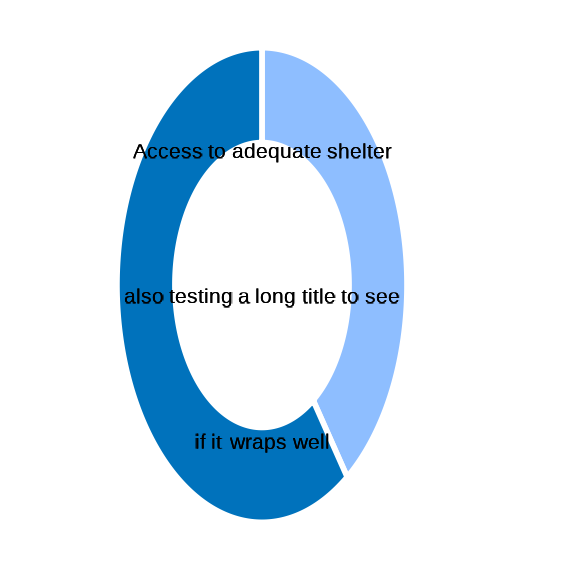

Indicator functions are designed to work based on data stored as a list - which is the default structure for a complex hierarchical survey dataset with nested tables.
The default export format from kobotoolbox includes variables names generated as a concatenation of groups and names.
The indicators calculation are based on specific patterns to be identified within the variable names. This allow to handle cases where variables and questions would have been shifted within the sequence of the questionnaire and through different questions groups.
The indicator functions also check that the data content is the one expected.
A check log is displayed in the console to keep track of all issues
Generating data from a specific form definition
One key function is to generate a dummy dataset based on a specific form structure To demonstrate the package we will use the standard questionnaire and then apply each indicator function to demonstrate them.
We can then also re-use the function to create dummy data based on any form and then apply each indicator function to actually verify which indicators can be created based on the form content.
fct_var_dummy
## let's initiate a dataframe with an index of n r records
n <- 384
frame <- dplyr::tibble(
index = paste0( "ID-",
purrr::as_vector(
purrr::map(n, sample(LETTERS, 4)) |>
purrr::map(paste0, collapse = "")),
"-",
formatC(1:n, width = nchar(n) + 1, flag = "0")
))
## test inject select_one
frame <- fct_var_dummy(
frame = frame,
name = "testselect_one",
type = "select_one",
list_opt = c("alpha", "beta", "delta"),
constraint = NULL
)
## test inject select_multiple in main
frame <- fct_var_dummy(
frame = frame,
name = "testselect_multiple",
type = "select_multiple",
list_opt = c("alpha", "beta", "delta"),
constraint = NULL
)
## test inject text
frame <- fct_var_dummy(
frame = frame,
name = "testtext",
type = "text",
list_opt = NULL,
constraint = NULL
)
## test inject numeric
frame <- fct_var_dummy(
frame = frame,
name = "testnumeric",
type = "numeric",
list_opt = NULL,
constraint = NULL
)
## test inject date
frame <- fct_var_dummy(
frame = frame,
name = "testdate",
type = "date",
list_opt = NULL,
constraint = NULL
)
## Preview out out
knitr::kable(head(frame, 5))| index | testselect_one | testselect_multiple_alpha | testselect_multiple_beta | testselect_multiple_delta | testtext | testnumeric | testdate |
|---|---|---|---|---|---|---|---|
| ID–0001 | beta | 0 | 0 | 0 | FreeText_-0001 | 41 | 2020-08-13 17:34:09 |
| ID–0002 | alpha | 1 | 0 | 1 | FreeText_-0002 | 46 | 2022-04-20 21:46:58 |
| ID–0003 | beta | 1 | 0 | 0 | FreeText_-0003 | 80 | 2021-10-04 11:33:09 |
| ID–0004 | alpha | 0 | 1 | 0 | FreeText_-0004 | 19 | 2021-03-13 11:42:30 |
| ID–0005 | beta | 1 | 0 | 1 | FreeText_-0005 | 53 | 2019-08-12 13:56:32 |
fct_kobo_dummy
## generate dummy dataset for different form version
## CAPI
form <- system.file("RMS_CAPI_v2.xlsx", package = "IndicatorCalc")
datalist <- fct_kobo_dummy(form,
n = 384,
file = NULL)
#> 1-start-start
#> 2-end-end
#> 3-calculate-start_t
#> 4-calculate-end_t
#> 5-calculate-time_ds
#> 6-calculate-time_dm
#> 7-start-geopoint-gps
#> 8-date-group_intro.interviewdate
#> 9-select_one-group_intro.Bureau
#> 10-select_one-group_intro.Country
#> 11-calculate-group_intro.countryname
#> 12-geopoint-group_intro.geopoint
#> 13-select_one-group_intro.pop_groups
#> 14-text-group_intro2.Intro01
#> 15-text-group_intro2.Intro02
#> 16-select_one-group_intro2.Intro03
#> 17-acknowledge-group_intro2.consent_form
#> 18-select_one-group_intro2.Intro04
#> 19-select_one-group_intro2.Intro05
#> 20-text-group_intro2.Intro05_other
#> 21-integer-group_Part1.HH01
#> 22-calculate-group_Part1.Relation_Count
#> 23-calculate-group_Part1.namechild2less
#> 24-calculate-group_Part1.nochild2less
#> 25-calculate-group_Part1.women_name_b_total
#> 26-calculate-group_Part1.women_name_b
#> 27-calculate-group_Part1.father_name_b
#> 28-calculate-group_Part1.women_name
#> 29-calculate-group_Part1.father_name
#> 30-calculate-group_Part1.adult_name
#> 31-calculate-group_Part1.woman1
#> 32-calculate-group_Part1.woman2
#> 33-calculate-group_Part1.woman3
#> 34-calculate-group_Part1.woman4
#> 35-calculate-group_Part1.woman5
#> 36-calculate-group_Part1.woman6
#> 37-calculate-group_Part1.fam_name1
#> 38-calculate-group_Part1.fam_name2
#> 39-calculate-group_Part1.fam_name3
#> 40-calculate-group_Part1.fam_name4
#> 41-calculate-group_Part1.fam_name5
#> 42-calculate-group_Part1.fam_name6
#> 43-calculate-group_Part1.fam_name7
#> 44-calculate-group_Part1.fam_name8
#> 45-calculate-group_Part1.fam_name9
#> 46-calculate-group_Part1.fam_name10
#> 47-calculate-group_Part1.fam_name11
#> 48-calculate-group_Part1.fam_name12
#> 49-calculate-group_Part1.fam_name13
#> 50-calculate-group_Part1.fam_name14
#> 51-calculate-group_Part1.fam_name15
#> 52-calculate-group_Part1.fam_name16
#> 53-calculate-group_Part1.fam_name17
#> 54-calculate-group_Part1.fam_name18
#> 55-calculate-group_Part1.fam_name19
#> 56-calculate-group_Part1.fam_name20
#> 57-calculate-group_Part1.age1
#> 58-calculate-group_Part1.age2
#> 59-calculate-group_Part1.age3
#> 60-calculate-group_Part1.age4
#> 61-calculate-group_Part1.age5
#> 62-calculate-group_Part1.age6
#> 63-calculate-group_Part1.age7
#> 64-calculate-group_Part1.age8
#> 65-calculate-group_Part1.age9
#> 66-calculate-group_Part1.age10
#> 67-calculate-group_Part1.age11
#> 68-calculate-group_Part1.age12
#> 69-calculate-group_Part1.age13
#> 70-calculate-group_Part1.age14
#> 71-calculate-group_Part1.age15
#> 72-calculate-group_Part1.age16
#> 73-calculate-group_Part1.age17
#> 74-calculate-group_Part1.age18
#> 75-calculate-group_Part1.age19
#> 76-calculate-group_Part1.age20
#> 77-calculate-group_Part1.sex1
#> 78-calculate-group_Part1.sex2
#> 79-calculate-group_Part1.sex3
#> 80-calculate-group_Part1.sex4
#> 81-calculate-group_Part1.sex5
#> 82-calculate-group_Part1.sex6
#> 83-calculate-group_Part1.sex7
#> 84-calculate-group_Part1.sex8
#> 85-calculate-group_Part1.sex9
#> 86-calculate-group_Part1.sex10
#> 87-calculate-group_Part1.sex11
#> 88-calculate-group_Part1.sex12
#> 89-calculate-group_Part1.sex13
#> 90-calculate-group_Part1.sex14
#> 91-calculate-group_Part1.sex15
#> 92-calculate-group_Part1.sex16
#> 93-calculate-group_Part1.sex17
#> 94-calculate-group_Part1.sex18
#> 95-calculate-group_Part1.sex19
#> 96-calculate-group_Part1.sex20
#> 97-select_one-group_Part2.P2.S1.S1_Dwelling.DWE01
#> 98-text-group_Part2.P2.S1.S1_Dwelling.DWE01_other
#> 99-select_one-group_Part2.P2.S1.S1_Dwelling.DWE02
#> 100-text-group_Part2.P2.S1.S1_Dwelling.DWE02_other
#> 101-select_one-group_Part2.P2.S1.S1_Dwelling.DWE03
#> 102-text-group_Part2.P2.S1.S1_Dwelling.DWE03_other
#> 103-select_one-group_Part2.P2.S1.S1_Dwelling.DWE04
#> 104-text-group_Part2.P2.S1.S1_Dwelling.DWE04_other
#> 105-integer-group_Part2.P2.S1.S1_Dwelling.DWE05
#> 106-select_one-group_Part2.P2.S1.S1_Dwelling.filter_camp
#> 107-select_one-group_Part2.P2.S1.S1_Dwelling.DWE06
#> 108-text-group_Part2.P2.S1.S1_Dwelling.DWE06_other
#> 109-select_one-group_Part2.P2.S1.S1_Dwelling.DWE07
#> 110-text-group_Part2.P2.S1.S1_Dwelling.DWE07_other
#> 111-select_one-group_Part2.P2.S1.S1_Dwelling.DWE08
#> 112-select_one-group_Part2.P2.S1.S1_Dwelling.DWE09
#> 113-select_one-group_Part2.P2.S1.S1_Dwelling.DWE10
#> 114-text-group_Part2.P2.S1.S1_Dwelling.DWE10_other
#> 115-select_one-group_Part2.P2.S1.S1_Dwelling.DWE11
#> 116-select_one-group_Part2.P2.S1.S1_Habitable_housing.COOK01
#> 117-select_one-group_Part2.P2.S1.S1_Habitable_housing.COOK02
#> 118-text-group_Part2.P2.S1.S1_Habitable_housing.COOK02_other
#> 119-select_one-group_Part2.P2.S1.S1_Habitable_housing.COOK03
#> 120-text-group_Part2.P2.S1.S1_Habitable_housing.COOK03_other
#> 121-select_one-group_Part2.P2.S1.S1_Habitable_housing.LIGHT01
#> 122-select_one-group_Part2.P2.S1.S1_Habitable_housing.LIGHT02
#> 123-text-group_Part2.P2.S1.S1_Habitable_housing.LIGHT02b
#> 124-select_one-group_Part2.P2.S1.S1_Habitable_housing.LIGHT03
#> 125-text-group_Part2.P2.S1.S1_Habitable_housing.LIGHT03b
#> 126-select_one-group_Part2.P2.S1.S1_Habitable_housing.DWA01
#> 127-text-group_Part2.P2.S1.S1_Habitable_housing.DWA01_other
#> 128-calculate-group_Part2.P2.S1.S1_Habitable_housing.source
#> 129-calculate-group_Part2.P2.S1.S1_Habitable_housing.source2
#> 130-select_one-group_Part2.P2.S1.S1_Habitable_housing.DWA02
#> 131-text-group_Part2.P2.S1.S1_Habitable_housing.DWA02_other
#> 132-select_one-group_Part2.P2.S1.S1_Habitable_housing.time_toi.DWA03a
#> 133-integer-group_Part2.P2.S1.S1_Habitable_housing.time_toi.DWA03b
#> 134-select_one-group_Part2.P2.S1.S1_Habitable_housing.DWA04
#> 135-select_one-group_Part2.P2.S1.S1_Habitable_housing.TOI01
#> 136-text-group_Part2.P2.S1.S1_Habitable_housing.TOI01_other
#> 137-select_one-group_Part2.P2.S1.S1_Habitable_housing.TOI02
#> 138-select_one-group_Part2.P2.S1.S1_Habitable_housing.TOI03
#> 139-text-group_Part2.P2.S1.S1_Habitable_housing.TOI03_other
#> 140-select_one-group_Part2.P2.S1.S1_Habitable_housing.TOI04
#> 141-text-group_Part2.P2.S1.S1_Habitable_housing.TOI04_other
#> 142-select_one-group_Part2.P2.S1.S1_Habitable_housing.TOI05
#> 143-calculate-group_Part2.P2.S2.latestson
#> 144-select_one-group_Part2.P2.S2.BIR01
#> 145-select_one-group_Part2.P2.S2.BIR02
#> 146-select_multiple-group_Part2.P2.S2.BIR03
#> 147-text-group_Part2.P2.S2.BIR03_other
#> 148-select_one-group_Part2.P2.S2.BIR04
#> 149-text-group_Part2.P2.S2.BIR04_other
#> 150-select_one-group_Part2.P2.S2.HEA01
#> 151-text-group_Part2.P2.S2.HEA01_other
#> 152-select_one-group_Part2.P2.S2.HEA02
#> 153-text-group_Part2.P2.S2.HEA02_other
#> 154-integer-group_Part2.P2.S2.HEA03
#> 155-select_one-group_Part2.P2.S2.SPF.SPF01_op
#> 156-select_one-group_Part2.P2.S2.SPF.SPF01a
#> 157-select_one-group_Part2.P2.S2.SPF.SPF01b
#> 158-select_one-group_Part2.P2.S2.SPF.SPF01c
#> 159-select_one-group_Part2.P2.S2.SPF.SPF01d
#> 160-select_one-group_Part2.P2.S2.SPF.SPF01e
#> 161-select_one-group_Part2.P2.S2.SPF.SPF01f
#> 162-select_one-group_Part2.P2.S2.SPF.SPF01g
#> 163-select_one-group_Part2.P2.S2.SPF.SPF01h
#> 164-calculate-group_Part3.listadult
#> 165-calculate-group_Part3.n_selected_adult18
#> 166-calculate-group_Part3.selected_adult18
#> 167-calculate-group_Part3.name_selectedadult18_age
#> 168-calculate-group_Part3.name_selectedadult18
#> 169-select_one-group_Part3.P3.S1.UNEM01
#> 170-select_one-group_Part3.P3.S1.UNEM02
#> 171-select_one-group_Part3.P3.S1.UNEM03
#> 172-select_one-group_Part3.P3.S1.UNEM04
#> 173-select_one-group_Part3.P3.S1.UNEM05
#> 174-select_one-group_Part3.P3.S1.UNEM06
#> 175-select_one-group_Part3.P3.S1.UNEM07
#> 176-select_one-group_Part3.P3.S1.UNEM08
#> 177-select_one-group_Part3.P3.S1.UNEM09
#> 178-select_one-group_Part3.P3.S1.UNEM10
#> 179-select_one-group_Part3.P3.S1.INC01
#> 180-select_one-group_Part3.P3.S1.BANK01
#> 181-select_one-group_Part3.P3.S1.BANK02
#> 182-select_one-group_Part3.P3.S1.BANK03
#> 183-select_one-group_Part3.P3.S1.BANK04
#> 184-select_one-group_Part3.P3.S1.BANK05
#> 185-select_one-group_Part3.P3.S2.SAF01
#> 186-select_one-group_Part3.P3.S2.GBV01.GBV01_001
#> 187-select_one-group_Part3.P3.S2.GBV01.GBV01a
#> 188-select_one-group_Part3.P3.S2.GBV01.GBV01b
#> 189-select_one-group_Part3.P3.S2.GBV01.GBV01c
#> 190-select_one-group_Part3.P3.S2.GBV01.GBV01d
#> 191-select_one-group_Part3.P3.S2.gbv_screen
#> 192-select_one-group_Part3.P3.S2.VAW.VAW01
#> 193-select_one-group_Part3.P3.S2.VAW.VAW01a
#> 194-select_one-group_Part3.P3.S2.VAW.VAW01b
#> 195-select_one-group_Part3.P3.S2.VAW.VAW01c
#> 196-select_one-group_Part3.P3.S2.VAW.VAW01d
#> 197-select_one-group_Part3.P3.S2.VAW.VAW01e
#> 198-select_one-end_survey.contact_number
#> 199-text-end_survey.number_respondent
#> 200-select_one-end_survey.end_result
#> 201-select_one-end_survey.name_respondent
#> 202-select_one-end_survey.final_notes
#> 203-text-end_survey.final_notes_entry
#> 1 in repeat -S1 ///calculate-group_Part1.S1.personId
#> 2 in repeat -S1 ///text-group_Part1.S1.S1_Household.HH02
#> 3 in repeat -S1 ///select_one-group_Part1.S1.S1_Household.HH03
#> 4 in repeat -S1 ///select_one-group_Part1.S1.S1_Household.HH04
#> 5 in repeat -S1 ///select_one-group_Part1.S1.S1_Household.HH05
#> 6 in repeat -S1 ///date-group_Part1.S1.S1_Household.HH06
#> 7 in repeat -S1 ///calculate-group_Part1.S1.S1_Household.calcul1
#> 8 in repeat -S1 ///integer-group_Part1.S1.S1_Household.age
#> 9 in repeat -S1 ///integer-group_Part1.S1.S1_Household.AgeMonths
#> 10 in repeat -S1 ///calculate-group_Part1.S1.S1_Household.ageMD
#> 11 in repeat -S1 ///integer-group_Part1.S1.S1_Household.HH07
#> 12 in repeat -S1 ///integer-group_Part1.S1.S1_Household.HH07_months
#> 13 in repeat -S1 ///select_one-group_Part1.S1.S1_Household.HH08
#> 14 in repeat -S1 ///calculate-group_Part1.S1.Relation_R
#> 15 in repeat -S1 ///calculate-group_Part1.S1.adult18
#> 16 in repeat -S1 ///calculate-group_Part1.S1.women_b
#> 17 in repeat -S1 ///calculate-group_Part1.S1.father_b
#> 18 in repeat -S1 ///calculate-group_Part1.S1.childLess2
#> 19 in repeat -S1 ///calculate-group_Part1.S1.childLess2name
#> 20 in repeat -S1 ///calculate-group_Part1.S1.women
#> 21 in repeat -S1 ///calculate-group_Part1.S1.father
#> 22 in repeat -S1 ///calculate-group_Part1.S1.adult
#> 23 in repeat -S1 ///calculate-group_Part1.S1.women_b_count
#> 1 in repeat -S2 ///calculate-group_Part1.S2.name_individual
#> 2 in repeat -S2 ///calculate-group_Part1.S2.ind_age_year
#> 3 in repeat -S2 ///calculate-group_Part1.S2.ind_age_month
#> 4 in repeat -S2 ///select_one-group_Part1.S2.S2_start.REF01
#> 5 in repeat -S2 ///calculate-group_Part1.S2.S2_start.citizenship
#> 6 in repeat -S2 ///select_one-group_Part1.S2.S2_start.REF02
#> 7 in repeat -S2 ///calculate-group_Part1.S2.S2_start.citizenship2
#> 8 in repeat -S2 ///select_one-group_Part1.S2.S2_start.REF03
#> 9 in repeat -S2 ///select_one-group_Part1.S2.S2_start.REF04
#> 10 in repeat -S2 ///select_one-group_Part1.S2.S2_start.REF05
#> 11 in repeat -S2 ///calculate-group_Part1.S2.S2_start.countrybirth
#> 12 in repeat -S2 ///select_one-group_Part1.S2.S2_start.REF07a
#> 13 in repeat -S2 ///select_one-group_Part1.S2.S2_start.REF07b
#> 14 in repeat -S2 ///select_one-group_Part1.S2.S2_start.REF07c
#> 15 in repeat -S2 ///select_one-group_Part1.S2.S2_start.REF07d
#> 16 in repeat -S2 ///select_one-group_Part1.S2.S2_start.REF08a
#> 17 in repeat -S2 ///select_one-group_Part1.S2.S2_start.REF08b
#> 18 in repeat -S2 ///select_one-group_Part1.S2.S2_start.REF08c
#> 19 in repeat -S2 ///select_one-group_Part1.S2.S2_start.REF08d
#> 20 in repeat -S2 ///select_one-group_Part1.S2.S2_start.REF09
#> 21 in repeat -S2 ///date-group_Part1.S2.S2_start.REF10a
#> 22 in repeat -S2 ///text-group_Part1.S2.S2_start.REF10b
#> 23 in repeat -S2 ///select_one-group_Part1.S2.S2_start.REF11
#> 24 in repeat -S2 ///select_one-group_Part1.S2.S2_start.REF12
#> 25 in repeat -S2 ///date-group_Part1.S2.S2_start.REF12a
#> 26 in repeat -S2 ///text-group_Part1.S2.S2_start.REF12b
#> 27 in repeat -S2 ///select_one-group_Part1.S2.S2_start.REF13
#> 28 in repeat -S2 ///select_one-group_Part1.S2.S2_start.REF14
#> 29 in repeat -S2 ///select_one-group_Part1.S2.S2_start.REF15
#> 30 in repeat -S2 ///select_one-group_Part1.S2.S2_start.REF16
#> 31 in repeat -S2 ///text-group_Part1.S2.S2_start.REF16_other
#> 32 in repeat -S2 ///select_one-group_Part1.S2.S2_start.REF16a
#> 33 in repeat -S2 ///text-group_Part1.S2.S2_start.REF16a_other
#> 34 in repeat -S2 ///select_multiple-group_Part1.S2.S3.IDP01
#> 35 in repeat -S2 ///text-group_Part1.S2.S3.IDP01a
#> 36 in repeat -S2 ///select_one-group_Part1.S2.S3.IDP02
#> 37 in repeat -S2 ///date-group_Part1.S2.S3.IDP02a
#> 38 in repeat -S2 ///text-group_Part1.S2.S3.IDP02b
#> 39 in repeat -S2 ///select_one_from_file-group_Part1.S2.S3.IDP03
#> 40 in repeat -S2 ///select_one_from_file-group_Part1.S2.S3.IDP04
#> 41 in repeat -S2 ///select_one-group_Part1.S2.S4.S4_above5.REG01
#> 42 in repeat -S2 ///select_one-group_Part1.S2.S4.S4_above5.REG01a
#> 43 in repeat -S2 ///select_one-group_Part1.S2.S4.S4_above5.REG01b
#> 44 in repeat -S2 ///select_one-group_Part1.S2.S4.S4_above5.REG01c
#> 45 in repeat -S2 ///select_one-group_Part1.S2.S4.S4_above5.REG01d
#> 46 in repeat -S2 ///select_one-group_Part1.S2.S4.S4_above5.REG01e
#> 47 in repeat -S2 ///select_one-group_Part1.S2.S4.S4_above5.REG01f
#> 48 in repeat -S2 ///select_one-group_Part1.S2.S4.S4_above5.REG01g
#> 49 in repeat -S2 ///select_one-group_Part1.S2.S4.REG02
#> 50 in repeat -S2 ///select_one-group_Part1.S2.S4.REG03
#> 51 in repeat -S2 ///select_one-group_Part1.S2.S4.REG04
#> 52 in repeat -S2 ///select_one-group_Part1.S2.S4.S4_below5.REG05
#> 53 in repeat -S2 ///select_one-group_Part1.S2.S4.S4_below5.REG05a
#> 54 in repeat -S2 ///select_one-group_Part1.S2.S4.S4_below5.REG05b
#> 55 in repeat -S2 ///select_one-group_Part1.S2.S4.S4_below5.REG05c
#> 56 in repeat -S2 ///select_one-group_Part1.S2.S4.S4_below5.REG05d
#> 57 in repeat -S2 ///select_one-group_Part1.S2.S4.S4_below5.REG05e
#> 58 in repeat -S2 ///select_one-group_Part1.S2.S4.S4_below5.REG05f
#> 59 in repeat -S2 ///select_one-group_Part1.S2.S4.REG06
#> 60 in repeat -S2 ///calculate-group_Part1.S2.indiv_05Less_name
#> 61 in repeat -S2 ///calculate-group_Part1.S2.indiv_05Less_age
#> 62 in repeat -S2 ///calculate-group_Part1.S2.age_month
#> 63 in repeat -S2 ///select_one-group_Part1.S2.S5.MMR01
#> 64 in repeat -S2 ///select_one-group_Part1.S2.S5.MMR02
#> 65 in repeat -S2 ///select_one-group_Part1.S2.S5.MMR03
#> 66 in repeat -S2 ///integer-group_Part1.S2.S5.MMR04
#> 67 in repeat -S2 ///select_one-group_Part1.S2.S6.DIS01a
#> 68 in repeat -S2 ///select_one-group_Part1.S2.S6.DIS01
#> 69 in repeat -S2 ///select_one-group_Part1.S2.S6.DIS02
#> 70 in repeat -S2 ///select_one-group_Part1.S2.S6.DIS03
#> 71 in repeat -S2 ///select_one-group_Part1.S2.S6.DIS04
#> 72 in repeat -S2 ///select_one-group_Part1.S2.S6.DIS05
#> 73 in repeat -S2 ///select_one-group_Part1.S2.S6.DIS06
#> 74 in repeat -S2 ///select_one-group_Part1.S2.S7.HACC01
#> 75 in repeat -S2 ///select_multiple-group_Part1.S2.S7.HACC02
#> 76 in repeat -S2 ///text-group_Part1.S2.S7.HACC02_other
#> 77 in repeat -S2 ///select_one-group_Part1.S2.S7.HACC03
#> 78 in repeat -S2 ///select_multiple-group_Part1.S2.S7.HACC04
#> 79 in repeat -S2 ///text-group_Part1.S2.S7.HACC04_other
#> 1 in repeat -P2.S3 ///calculate-group_Part2.P2.S3.child_edu_name
#> 2 in repeat -P2.S3 ///calculate-group_Part2.P2.S3.child_edu_age
#> 3 in repeat -P2.S3 ///select_one-group_Part2.P2.S3.child_edu.EDU01
#> 4 in repeat -P2.S3 ///select_one-group_Part2.P2.S3.child_edu.EDU02
#> 5 in repeat -P2.S3 ///select_one-group_Part2.P2.S3.child_edu.EDU03
#> 6 in repeat -P2.S3 ///select_one-group_Part2.P2.S3.child_edu.EDU04
#> 7 in repeat -P2.S3 ///text-group_Part2.P2.S3.child_edu.EDU04_other
#> 8 in repeat -P2.S3 ///select_one-group_Part2.P2.S3.comm_act.COMM01
#> 9 in repeat -P2.S3 ///integer-group_Part2.P2.S3.comm_act.COMM02
#> 10 in repeat -P2.S3 ///select_one-group_Part2.P2.S3.comm_act.COMM03
#> 11 in repeat -P2.S3 ///select_one-group_Part2.P2.S3.comm_act.COMM04
# openxlsx::write.xlsx(datalist, here::here("inst", "dummy_RMS_CAPI_v2.xlsx"))
form <- system.file("RMS_CAPI_v3.xlsx", package = "IndicatorCalc")
datalist <- fct_kobo_dummy(form,
n = 384,
file = NULL)
#> Warning: Expected 2 pieces. Additional pieces discarded in 1 rows [376].
#> 1-start-start
#> 2-end-end
#> 3-calculate-start_time_1
#> 4-date-intro.interviewdate
#> 5-select_one-intro.Bureau
#> 6-select_one-intro.Country
#> 7-calculate-intro.countryname
#> 8-geopoint-intro.geopoint
#> 9-select_one-intro.pop_groups
#> 10-text-intro2.name_enumerator
#> 11-text-intro2.Intro01
#> 12-text-intro2.Intro02
#> 13-select_one-intro2.Intro03
#> 14-acknowledge-intro2.consent_form
#> 15-select_one-intro2.Intro04
#> 16-select_one-intro2.Intro05
#> 17-text-intro2.Intro05_other
#> 18-text-Part1.HHH01_aux
#> 19-integer-Part1.HHH01_age
#> 20-select_one-Part1.respondent
#> 21-calculate-Part1.quality_check.MM18above
#> 22-calculate-Part1.quality_check.member1
#> 23-calculate-Part1.quality_check.member2
#> 24-calculate-Part1.quality_check.member3
#> 25-calculate-Part1.quality_check.member4
#> 26-calculate-Part1.quality_check.member5
#> 27-calculate-Part1.quality_check.member6
#> 28-calculate-Part1.quality_check.adult_sum_001
#> 29-calculate-Part1.quality_check.hh_size_001
#> 30-acknowledge-Part1.quality_check.confirm_hhsize
#> 31-calculate-namechild2less
#> 32-calculate-nochild2less
#> 33-calculate-women_name_b_total
#> 34-calculate-women_name_b
#> 35-calculate-father_name_b
#> 36-calculate-women_name
#> 37-calculate-father_name
#> 38-calculate-adult_name
#> 39-select_one-Part2.P2_S1.DWE01
#> 40-text-Part2.P2_S1.DWE01_other
#> 41-select_one-Part2.P2_S1.SHEL01
#> 42-select_one-Part2.P2_S1.SHEL02
#> 43-select_one-Part2.P2_S1.SHEL03
#> 44-select_one-Part2.P2_S1.SHEL04
#> 45-select_one-Part2.P2_S1.SHEL05
#> 46-select_one-Part2.P2_S1.SHEL06
#> 47-select_one-Part2.P2_S1.RISK01
#> 48-select_one-Part2.P2_S1.RISK02
#> 49-integer-Part2.P2_S1.DWE05
#> 50-select_one-Part2.P2_S2.filter_camp
#> 51-select_one-Part2.P2_S2.DWE06_land
#> 52-text-Part2.P2_S2.DWE06_other_land
#> 53-select_one-Part2.P2_S2.DWE06a_land
#> 54-select_one-Part2.P2_S2.DWE07_land
#> 55-text-Part2.P2_S2.DWE07_other_land
#> 56-select_one-Part2.P2_S2.DWE06_housing
#> 57-text-Part2.P2_S2.DWE06_other_housing
#> 58-select_one-Part2.P2_S2.DWE06a_housing
#> 59-select_one-Part2.P2_S2.DWE07_housing
#> 60-text-Part2.P2_S2.DWE07_other_housing
#> 61-select_one-Part2.P2_S2.DWE08
#> 62-select_one-Part2.P2_S2.DWE09
#> 63-text-Part2.P2_S2.DWE09_other
#> 64-select_one-Part2.P2_S2.DWE10
#> 65-select_one-Part2.P2_S3.COOK01
#> 66-select_one-Part2.P2_S3.COOK02
#> 67-text-Part2.P2_S3.COOK02_other
#> 68-select_one-Part2.P2_S3.COOK03
#> 69-text-Part2.P2_S3.COOK03_other
#> 70-select_one-Part2.P2_S3.LIGHT01
#> 71-select_one-Part2.P2_S3.LIGHT02
#> 72-text-Part2.P2_S3.LIGHT02_other
#> 73-select_one-Part2.P2_S3.LIGHT03
#> 74-text-Part2.P2_S3.LIGHT03_other
#> 75-calculate-Part2.P2_S3.electricity_source
#> 76-select_multiple-Part2.P2_S3.LIGHT04
#> 77-text-Part2.P2_S3.LIGHT04_other
#> 78-select_one-Part2.P2_S3.LIGHT05
#> 79-integer-Part2.P2_S3.LIGHT05_11
#> 80-integer-Part2.P2_S3.LIGHT05_22
#> 81-select_one-Part2.P2_S3.LIGHT06
#> 82-integer-Part2.P2_S3.LIGHT06_11
#> 83-integer-Part2.P2_S3.LIGHT06_22
#> 84-select_one-Part2.P2_S3.DWA01
#> 85-text-Part2.P2_S3.DWA01_other
#> 86-calculate-Part2.P2_S3.source
#> 87-calculate-Part2.P2_S3.source2
#> 88-select_one-Part2.P2_S3.DWA02
#> 89-text-Part2.P2_S3.DWA02_other
#> 90-select_one-Part2.P2_S3.time_toi.DWA03a
#> 91-integer-Part2.P2_S3.time_toi.DWA03b
#> 92-select_one-Part2.P2_S3.DWA04
#> 93-select_one-Part2.P2_S3.TOI01
#> 94-text-Part2.P2_S3.TOI01_other
#> 95-select_one-Part2.P2_S3.TOI02
#> 96-select_one-Part2.P2_S3.TOI03
#> 97-text-Part2.P2_S3.TOI03_other
#> 98-select_one-Part2.P2_S3.TOI04
#> 99-text-Part2.P2_S3.TOI04_other
#> 100-select_one-Part2.P2_S3.TOI05
#> 101-calculate-Part2.P2_S4.latestson
#> 102-select_one-Part2.P2_S4.BIR01
#> 103-select_one-Part2.P2_S4.BIR02
#> 104-select_multiple-Part2.P2_S4.BIR03
#> 105-text-Part2.P2_S4.BIR03_other
#> 106-select_one-Part2.P2_S4.BIR04
#> 107-text-Part2.P2_S4.BIR04_other
#> 108-select_one-Part2.P2_S4.HEA01
#> 109-text-Part2.P2_S4.HEA01_other
#> 110-select_one-Part2.P2_S4.HEA02
#> 111-text-Part2.P2_S4.HEA02_other
#> 112-integer-Part2.P2_S4.HEA03
#> 113-select_one-Part2.P2_S5.SPF01_op
#> 114-select_one-Part2.P2_S5.SPF01a
#> 115-select_one-Part2.P2_S5.SPF01b
#> 116-select_one-Part2.P2_S5.SPF01c
#> 117-select_one-Part2.P2_S5.SPF01d
#> 118-select_one-Part2.P2_S5.SPF01e
#> 119-select_one-Part2.P2_S5.SPF01f
#> 120-select_one-Part2.P2_S5.SPF01g
#> 121-select_one-Part2.P2_S5.SPF01h
#> 122-select_one-Part2.P2_S5.SPF01j
#> 123-select_one-Part2.P2_S5.SPF01k
#> 124-select_one-Part2.P2_S5.SPF01l
#> 125-select_one-Part2.P2_S5.SPF01m
#> 126-select_one-Part2.P2_S5.SPF01n
#> 127-select_one-Part2.P2_S5.SPF01o
#> 128-select_one-Part2.P2_S5.SPF01p
#> 129-calculate-Part3.first_random.random1ap
#> 130-calculate-Part3.first_random.eadult_nap
#> 131-calculate-Part3.first_random.epositionap
#> 132-calculate-Part3.first_random.random_indexap
#> 133-calculate-Part3.first_random.selected_adultap
#> 134-calculate-Part3.first_random.name_selectedadult18
#> 135-select_one-Part3.available_first_random.random_present
#> 136-calculate-Part3.second_random.random1ap2
#> 137-calculate-Part3.second_random.eadult_nap2
#> 138-calculate-Part3.second_random.epositionap2
#> 139-calculate-Part3.second_random.random_indexap2
#> 140-calculate-Part3.second_random.selected_adultap2
#> 141-calculate-Part3.second_random.name_selectedadult18_2
#> 142-select_one-Part3.second_availability.random_present_2
#> 143-select_one-Part3.name_respondent_individual
#> 144-select_one-Part3.P3_S1.EDU01_random
#> 145-select_one-Part3.P3_S1.UNEM01
#> 146-select_one-Part3.P3_S1.UNEM02
#> 147-select_one-Part3.P3_S1.UNEM03
#> 148-select_one-Part3.P3_S1.UNEM04
#> 149-select_one-Part3.P3_S1.UNEM05
#> 150-select_one-Part3.P3_S1.UNEM06
#> 151-select_one-Part3.P3_S1.UNEM07
#> 152-select_one-Part3.P3_S1.UNEM08
#> 153-select_one-Part3.P3_S1.UNEM09
#> 154-select_one-Part3.P3_S1.UNEM10
#> 155-select_one-Part3.P3_S1.INC01
#> 156-select_one-Part3.P3_S1.INC02
#> 157-select_one-Part3.P3_S1.BANK01
#> 158-select_one-Part3.P3_S1.BANK02
#> 159-select_one-Part3.P3_S1.BANK03
#> 160-select_one-Part3.P3_S1.BANK04
#> 161-select_one-Part3.P3_S1.BANK05
#> 162-select_one-Part3.P3_S3.FRM01
#> 163-select_one-Part3.P3_S3.FRM02
#> 164-select-Part3.P3_S3.FRM03
#> 165-text-Part3.P3_S3.FRM03_other
#> 166-select_one-Part3.P3_S2.SAF01
#> 167-select_one-Part3.P3_S2.GBV01.GBV01_001
#> 168-select_one-Part3.P3_S2.GBV01.GBV01a
#> 169-select_one-Part3.P3_S2.GBV01.GBV01b
#> 170-select_one-Part3.P3_S2.GBV01.GBV01c
#> 171-select_one-Part3.P3_S2.GBV01.GBV01d
#> 172-select_one-Part3.P3_S2.gbv_screen
#> 173-select_one-Part3.P3_S2.VAWpre_001
#> 174-select_one-Part3.P3_S2.VAWpre01
#> 175-select_one-Part3.P3_S2.VAWpre02
#> 176-select_one-Part3.P3_S2.VAWpre03
#> 177-select_one-Part3.P3_S2.VAWpre04
#> 178-select_one-Part3.P3_S2.VAW.VAW01
#> 179-select_one-Part3.P3_S2.VAW.VAW01a
#> 180-select_one-Part3.P3_S2.VAW.VAW01b
#> 181-select_one-Part3.P3_S2.VAW.VAW01c
#> 182-select_one-Part3.P3_S2.VAW.VAW01d
#> 183-select_one-Part3.P3_S2.VAW.VAW01e
#> 184-select_one-complete_survey.contact_number
#> 185-text-complete_survey.number_respondent
#> 186-select_one-complete_survey.end_result
#> 187-select_one-complete_survey.name_respondent
#> 188-select_one-complete_survey.final_notes
#> 189-text-complete_survey.final_notes_entry
#> 190-calculate-end_time_1
#> 1 in repeat -rpt_hhmnames ///calculate-Part1.rpt_hhmnames.hhmnames_pos
#> 2 in repeat -rpt_hhmnames ///calculate-Part1.rpt_hhmnames.HHH01_2_aux
#> 3 in repeat -rpt_hhmnames ///text-Part1.rpt_hhmnames.HH01_aux
#> 4 in repeat -rpt_hhmnames ///select_one-Part1.rpt_hhmnames.HH03_aux
#> 5 in repeat -rpt_hhmnames ///calculate-Part1.rpt_hhmnames.HH01_2_aux
#> 6 in repeat -rpt_hhmnames ///calculate-Part1.rpt_hhmnames.HH03_2_aux
#> 1 in repeat -S1 ///calculate-Part1.S1.personId
#> 2 in repeat -S1 ///calculate-Part1.S1.hhroster_pos_aux
#> 3 in repeat -S1 ///calculate-Part1.S1.hhmnames_pos_match
#> 4 in repeat -S1 ///calculate-Part1.S1.HH01
#> 5 in repeat -S1 ///calculate-Part1.S1.HH03
#> 6 in repeat -S1 ///select_one-Part1.S1.HH04
#> 7 in repeat -S1 ///select_one-Part1.S1.HH05
#> 8 in repeat -S1 ///date-Part1.S1.HH06
#> 9 in repeat -S1 ///calculate-Part1.S1.calcul1
#> 10 in repeat -S1 ///integer-Part1.S1.age
#> 11 in repeat -S1 ///integer-Part1.S1.AgeMonths
#> 12 in repeat -S1 ///calculate-Part1.S1.ageMD
#> 13 in repeat -S1 ///integer-Part1.S1.age_est
#> 14 in repeat -S1 ///integer-Part1.S1.months_est
#> 15 in repeat -S1 ///calculate-Part1.S1.HH07
#> 16 in repeat -S1 ///calculate-Part1.S1.HH07_months
#> 17 in repeat -S1 ///select_one-Part1.S1.HH08
#> 18 in repeat -S1 ///calculate-Part1.S1.start_time_2
#> 19 in repeat -S1 ///calculate-Part1.S1.position
#> 20 in repeat -S1 ///calculate-Part1.S1.Relation_R
#> 21 in repeat -S1 ///calculate-Part1.S1.adult18
#> 22 in repeat -S1 ///calculate-Part1.S1.women_b
#> 23 in repeat -S1 ///calculate-Part1.S1.father_b
#> 24 in repeat -S1 ///calculate-Part1.S1.childLess2
#> 25 in repeat -S1 ///calculate-Part1.S1.childLess2name
#> 26 in repeat -S1 ///calculate-Part1.S1.women
#> 27 in repeat -S1 ///calculate-Part1.S1.father
#> 28 in repeat -S1 ///calculate-Part1.S1.adult
#> 29 in repeat -S1 ///calculate-Part1.S1.women_b_count
#> 30 in repeat -S1 ///calculate-Part1.S1.hh_size
#> 31 in repeat -S1 ///calculate-Part1.S1.hhhead_age_ab18
#> 32 in repeat -S1 ///calculate-Part1.S1.adult_sum
#> 33 in repeat -S1 ///calculate-Part1.S1.hhhead_age
#> 34 in repeat -S1 ///calculate-Part1.S1.position18
#> 35 in repeat -S1 ///calculate-Part1.S1.adult01
#> 36 in repeat -S1 ///calculate-Part1.S1.age18above
#> 1 in repeat -S2_repeat ///calculate-S2_repeat.name_individual
#> 2 in repeat -S2_repeat ///calculate-S2_repeat.ind_age_year
#> 3 in repeat -S2_repeat ///calculate-S2_repeat.ind_age_month
#> 4 in repeat -S2_repeat ///select_one-S2_repeat.P1_S2.REF01
#> 5 in repeat -S2_repeat ///calculate-S2_repeat.P1_S2.citizenship
#> 6 in repeat -S2_repeat ///select_one-S2_repeat.P1_S2.REF02
#> 7 in repeat -S2_repeat ///calculate-S2_repeat.P1_S2.citizenship2
#> 8 in repeat -S2_repeat ///select_one-S2_repeat.P1_S2.REF03
#> 9 in repeat -S2_repeat ///select_one-S2_repeat.P1_S2.REF04
#> 10 in repeat -S2_repeat ///select_one-S2_repeat.P1_S2.REF05
#> 11 in repeat -S2_repeat ///calculate-S2_repeat.P1_S2.countrybirth
#> 12 in repeat -S2_repeat ///select_one-S2_repeat.P1_S2.REF07
#> 13 in repeat -S2_repeat ///select_one-S2_repeat.P1_S2.REF08
#> 14 in repeat -S2_repeat ///select_one-S2_repeat.P1_S2.REF09
#> 15 in repeat -S2_repeat ///date-S2_repeat.P1_S2.REF10a
#> 16 in repeat -S2_repeat ///text-S2_repeat.P1_S2.REF10b
#> 17 in repeat -S2_repeat ///select_one-S2_repeat.P1_S2.REF11
#> 18 in repeat -S2_repeat ///select_one-S2_repeat.P1_S2.REF12
#> 19 in repeat -S2_repeat ///date-S2_repeat.P1_S2.REF12a
#> 20 in repeat -S2_repeat ///text-S2_repeat.P1_S2.REF12b
#> 21 in repeat -S2_repeat ///select_one-S2_repeat.P1_S2.REF13
#> 22 in repeat -S2_repeat ///select_one-S2_repeat.P1_S2.REF14
#> 23 in repeat -S2_repeat ///select_one-S2_repeat.P1_S2.REF15
#> 24 in repeat -S2_repeat ///select_one-S2_repeat.P1_S2.REF16
#> 25 in repeat -S2_repeat ///text-S2_repeat.P1_S2.REF16_other
#> 26 in repeat -S2_repeat ///select_one-S2_repeat.P1_S2.REF16a
#> 27 in repeat -S2_repeat ///text-S2_repeat.P1_S2.REF16a_other
#> 28 in repeat -S2_repeat ///select_multiple-S2_repeat.P1_S3.IDP01
#> 29 in repeat -S2_repeat ///text-S2_repeat.P1_S3.IDP01a
#> 30 in repeat -S2_repeat ///select_one-S2_repeat.P1_S3.IDP02
#> 31 in repeat -S2_repeat ///date-S2_repeat.P1_S3.IDP02a
#> 32 in repeat -S2_repeat ///text-S2_repeat.P1_S3.IDP02b
#> 33 in repeat -S2_repeat ///select_one_from_file-S2_repeat.P1_S3.IDP03
#> 34 in repeat -S2_repeat ///select_one_from_file-S2_repeat.P1_S3.IDP04
#> 35 in repeat -S2_repeat ///select_one-S2_repeat.P1_S4.S4_above5.REG01
#> 36 in repeat -S2_repeat ///select_one-S2_repeat.P1_S4.S4_above5.REG01a
#> 37 in repeat -S2_repeat ///select_one-S2_repeat.P1_S4.S4_above5.REG01b
#> 38 in repeat -S2_repeat ///select_one-S2_repeat.P1_S4.S4_above5.REG01c
#> 39 in repeat -S2_repeat ///select_one-S2_repeat.P1_S4.S4_above5.REG01d
#> 40 in repeat -S2_repeat ///select_one-S2_repeat.P1_S4.S4_above5.REG01e
#> 41 in repeat -S2_repeat ///select_one-S2_repeat.P1_S4.S4_above5.REG01f
#> 42 in repeat -S2_repeat ///select_one-S2_repeat.P1_S4.S4_above5.REG01g
#> 43 in repeat -S2_repeat ///select_one-S2_repeat.P1_S4.REG02
#> 44 in repeat -S2_repeat ///select_one-S2_repeat.P1_S4.REG03
#> 45 in repeat -S2_repeat ///select_one-S2_repeat.P1_S4.REG04
#> 46 in repeat -S2_repeat ///select_one-S2_repeat.P1_S4.S4_below5.REG05
#> 47 in repeat -S2_repeat ///select_one-S2_repeat.P1_S4.S4_below5.REG05a
#> 48 in repeat -S2_repeat ///select_one-S2_repeat.P1_S4.S4_below5.REG05b
#> 49 in repeat -S2_repeat ///select_one-S2_repeat.P1_S4.S4_below5.REG05c
#> 50 in repeat -S2_repeat ///select_one-S2_repeat.P1_S4.S4_below5.REG05d
#> 51 in repeat -S2_repeat ///select_one-S2_repeat.P1_S4.S4_below5.REG05e
#> 52 in repeat -S2_repeat ///select_one-S2_repeat.P1_S4.S4_below5.REG05f
#> 53 in repeat -S2_repeat ///select_one-S2_repeat.P1_S4.REG06
#> 54 in repeat -S2_repeat ///select_one-S2_repeat.P1_S5.MMR01
#> 55 in repeat -S2_repeat ///select_one-S2_repeat.P1_S5.MMR02
#> 56 in repeat -S2_repeat ///select_one-S2_repeat.P1_S5.MMR03
#> 57 in repeat -S2_repeat ///integer-S2_repeat.P1_S5.MMR04
#> 58 in repeat -S2_repeat ///select_one-S2_repeat.P1_S6.DIS01a
#> 59 in repeat -S2_repeat ///select_one-S2_repeat.P1_S6.DIS01
#> 60 in repeat -S2_repeat ///select_one-S2_repeat.P1_S6.DIS02
#> 61 in repeat -S2_repeat ///select_one-S2_repeat.P1_S6.DIS03
#> 62 in repeat -S2_repeat ///select_one-S2_repeat.P1_S6.DIS04
#> 63 in repeat -S2_repeat ///select_one-S2_repeat.P1_S6.DIS05
#> 64 in repeat -S2_repeat ///select_one-S2_repeat.P1_S6.DIS06
#> 65 in repeat -S2_repeat ///select_one-S2_repeat.P1_S7.HACC01
#> 66 in repeat -S2_repeat ///select_one-S2_repeat.P1_S7.HACC02
#> 67 in repeat -S2_repeat ///text-S2_repeat.P1_S7.HACC02_other
#> 68 in repeat -S2_repeat ///calculate-S2_repeat.P1_S7.reason_care
#> 69 in repeat -S2_repeat ///select_one-S2_repeat.P1_S7.HACC03
#> 70 in repeat -S2_repeat ///select_multiple-S2_repeat.P1_S7.HACC04
#> 71 in repeat -S2_repeat ///text-S2_repeat.P1_S7.HACC04_other
#> 72 in repeat -S2_repeat ///select_one-S2_repeat.P1_S8.S8_edu.EDU01
#> 73 in repeat -S2_repeat ///select_one-S2_repeat.P1_S8.S8_edu.EDU02
#> 74 in repeat -S2_repeat ///select_one-S2_repeat.P1_S8.S8_edu.EDU03
#> 75 in repeat -S2_repeat ///select_one-S2_repeat.P1_S8.S8_edu.EDU04
#> 76 in repeat -S2_repeat ///text-S2_repeat.P1_S8.S8_edu.EDU04_other
#> 77 in repeat -S2_repeat ///select_one-S2_repeat.P1_S8.S8_edu.EDU05
#> 78 in repeat -S2_repeat ///text-S2_repeat.P1_S8.S8_edu.EDU05_other
#> 79 in repeat -S2_repeat ///select_one-S2_repeat.P1_S8.S8_comm.COMM01
#> 80 in repeat -S2_repeat ///integer-S2_repeat.P1_S8.S8_comm.COMM02
#> 81 in repeat -S2_repeat ///select_one-S2_repeat.P1_S8.S8_comm.COMM03
#> 82 in repeat -S2_repeat ///select_one-S2_repeat.P1_S8.S8_comm.COMM04
# openxlsx::write.xlsx(datalist, here::here("inst", "dummy_RMS_CAPI_v3.xlsx"))
## CATI
form <- system.file("RMS_CATI_v0.xlsx", package = "IndicatorCalc")
datalist <- fct_kobo_dummy(form,
n = 384,
file = NULL)
#> 1-start-start
#> 2-end-end
#> 3-calculate-start_t
#> 4-calculate-end_t
#> 5-calculate-time_ds
#> 6-calculate-time_dm
#> 7-text-group_survey.Intro01
#> 8-text-group_survey.Intro02
#> 9-integer-group_survey.number
#> 10-integer-group_survey.call_attempt
#> 11-select_one-group_survey.attempt1
#> 12-select_one-group_survey.attempt2
#> 13-select_one-group_survey.attempt3
#> 14-acknowledge-group_survey.next_attempt
#> 15-date-group_intro.interviewdate
#> 16-select_one-group_intro.Bureau
#> 17-select_one-group_intro.Country
#> 18-calculate-group_intro.countryname
#> 19-select_one-group_intro.pop_groups
#> 20-acknowledge-group_consent.consent_form
#> 21-select_one-group_consent.Intro04
#> 22-integer-group_Part1.HH01
#> 23-calculate-group_Part1.Relation_Count
#> 24-calculate-group_Part1.namechild2less
#> 25-calculate-group_Part1.nochild2less
#> 26-calculate-group_Part1.women_name_b_total
#> 27-calculate-group_Part1.women_name_b
#> 28-calculate-group_Part1.father_name_b
#> 29-calculate-group_Part1.women_name
#> 30-calculate-group_Part1.father_name
#> 31-calculate-group_Part1.adult_name
#> 32-calculate-group_Part1.woman1
#> 33-calculate-group_Part1.woman2
#> 34-calculate-group_Part1.woman3
#> 35-calculate-group_Part1.woman4
#> 36-calculate-group_Part1.woman5
#> 37-calculate-group_Part1.woman6
#> 38-calculate-group_Part1.fam_name1
#> 39-calculate-group_Part1.fam_name2
#> 40-calculate-group_Part1.fam_name3
#> 41-calculate-group_Part1.fam_name4
#> 42-calculate-group_Part1.fam_name5
#> 43-calculate-group_Part1.fam_name6
#> 44-calculate-group_Part1.fam_name7
#> 45-calculate-group_Part1.fam_name8
#> 46-calculate-group_Part1.fam_name9
#> 47-calculate-group_Part1.fam_name10
#> 48-calculate-group_Part1.fam_name11
#> 49-calculate-group_Part1.fam_name12
#> 50-calculate-group_Part1.fam_name13
#> 51-calculate-group_Part1.fam_name14
#> 52-calculate-group_Part1.fam_name15
#> 53-calculate-group_Part1.fam_name16
#> 54-calculate-group_Part1.fam_name17
#> 55-calculate-group_Part1.fam_name18
#> 56-calculate-group_Part1.fam_name19
#> 57-calculate-group_Part1.fam_name20
#> 58-calculate-group_Part1.age1
#> 59-calculate-group_Part1.age2
#> 60-calculate-group_Part1.age3
#> 61-calculate-group_Part1.age4
#> 62-calculate-group_Part1.age5
#> 63-calculate-group_Part1.age6
#> 64-calculate-group_Part1.age7
#> 65-calculate-group_Part1.age8
#> 66-calculate-group_Part1.age9
#> 67-calculate-group_Part1.age10
#> 68-calculate-group_Part1.age11
#> 69-calculate-group_Part1.age12
#> 70-calculate-group_Part1.age13
#> 71-calculate-group_Part1.age14
#> 72-calculate-group_Part1.age15
#> 73-calculate-group_Part1.age16
#> 74-calculate-group_Part1.age17
#> 75-calculate-group_Part1.age18
#> 76-calculate-group_Part1.age19
#> 77-calculate-group_Part1.age20
#> 78-calculate-group_Part1.sex1
#> 79-calculate-group_Part1.sex2
#> 80-calculate-group_Part1.sex3
#> 81-calculate-group_Part1.sex4
#> 82-calculate-group_Part1.sex5
#> 83-calculate-group_Part1.sex6
#> 84-calculate-group_Part1.sex7
#> 85-calculate-group_Part1.sex8
#> 86-calculate-group_Part1.sex9
#> 87-calculate-group_Part1.sex10
#> 88-calculate-group_Part1.sex11
#> 89-calculate-group_Part1.sex12
#> 90-calculate-group_Part1.sex13
#> 91-calculate-group_Part1.sex14
#> 92-calculate-group_Part1.sex15
#> 93-calculate-group_Part1.sex16
#> 94-calculate-group_Part1.sex17
#> 95-calculate-group_Part1.sex18
#> 96-calculate-group_Part1.sex19
#> 97-calculate-group_Part1.sex20
#> 98-calculate-group_Part1.name_individual
#> 99-calculate-group_Part1.ind_age_year
#> 100-calculate-group_Part1.ind_age_month
#> 101-calculate-group_Part1.sumbelow5
#> 102-calculate-group_Part1.sumbelow18
#> 103-calculate-group_Part1.sumage_vaccine
#> 104-calculate-group_Part1.sumchild_edu_calcul
#> 105-calculate-group_Part1.nobelow5
#> 106-calculate-group_Part1.nobelow18
#> 107-calculate-group_Part1.noage_vaccine
#> 108-calculate-group_Part1.nochild_edu_calcul
#> 109-select_one-group_Part1.S2.REF01
#> 110-calculate-group_Part1.S2.citizenship
#> 111-select_one-group_Part1.S2.REF02
#> 112-calculate-group_Part1.S2.citizenship2
#> 113-select_one-group_Part1.S2.REF03
#> 114-select_one-group_Part1.S2.REF04
#> 115-select_one-group_Part1.S2.REF05
#> 116-calculate-group_Part1.S2.countrybirth
#> 117-select_one-group_Part1.S2.REF07a
#> 118-select_one-group_Part1.S2.REF07b
#> 119-select_one-group_Part1.S2.REF07c
#> 120-select_one-group_Part1.S2.REF07d
#> 121-select_one-group_Part1.S2.REF08a
#> 122-select_one-group_Part1.S2.REF08b
#> 123-select_one-group_Part1.S2.REF08c
#> 124-select_one-group_Part1.S2.REF08d
#> 125-select_one-group_Part1.S2.REF09
#> 126-date-group_Part1.S2.REF10a
#> 127-text-group_Part1.S2.REF10b
#> 128-select_one-group_Part1.S2.REF11
#> 129-select_one-group_Part1.S2.REF12
#> 130-date-group_Part1.S2.REF12a
#> 131-text-group_Part1.S2.REF12b
#> 132-select_one-group_Part1.S2.REF13
#> 133-select_one-group_Part1.S2.REF14
#> 134-select_one-group_Part1.S2.REF15
#> 135-select_one-group_Part1.S2.REF16
#> 136-text-group_Part1.S2.REF16_other
#> 137-select_one-group_Part1.S2.REF16a
#> 138-text-group_Part1.S2.REF16a_other
#> 139-select_multiple-group_Part1.S3.IDP01
#> 140-text-group_Part1.S3.IDP01a
#> 141-select_one-group_Part1.S3.IDP02
#> 142-date-group_Part1.S3.IDP02a
#> 143-text-group_Part1.S3.IDP02b
#> 144-select_one_from_file-group_Part1.S3.IDP03
#> 145-select_one_from_file-group_Part1.S3.IDP04
#> 146-select_one-group_Part1.S4.S4_above5.REG01
#> 147-select_one-group_Part1.S4.S4_above5.REG01a
#> 148-select_one-group_Part1.S4.S4_above5.REG01b
#> 149-select_one-group_Part1.S4.S4_above5.REG01c
#> 150-select_one-group_Part1.S4.S4_above5.REG01d
#> 151-select_one-group_Part1.S4.S4_above5.REG01e
#> 152-select_one-group_Part1.S4.S4_above5.REG01f
#> 153-select_one-group_Part1.S4.S4_above5.REG01g
#> 154-select_one-group_Part1.S4.REG02
#> 155-select_one-group_Part1.S6.DIS01a
#> 156-select_one-group_Part1.S6.DIS01
#> 157-select_one-group_Part1.S6.DIS02
#> 158-select_one-group_Part1.S6.DIS03
#> 159-select_one-group_Part1.S6.DIS04
#> 160-select_one-group_Part1.S6.DIS05
#> 161-select_one-group_Part1.S6.DIS06
#> 162-select_one-group_Part1.S7.HACC01
#> 163-select_multiple-group_Part1.S7.HACC02
#> 164-text-group_Part1.S7.HACC02_other
#> 165-select_one-group_Part1.S7.HACC03
#> 166-select_multiple-group_Part1.S7.HACC04
#> 167-text-group_Part1.S7.HACC04_other
#> 168-select_one-group_Part2.P2.S1.S1_Dwelling.DWE01
#> 169-text-group_Part2.P2.S1.S1_Dwelling.DWE01_other
#> 170-select_one-group_Part2.P2.S1.S1_Dwelling.DWE02
#> 171-text-group_Part2.P2.S1.S1_Dwelling.DWE02_other
#> 172-select_one-group_Part2.P2.S1.S1_Dwelling.DWE03
#> 173-text-group_Part2.P2.S1.S1_Dwelling.DWE03_other
#> 174-select_one-group_Part2.P2.S1.S1_Dwelling.DWE04
#> 175-text-group_Part2.P2.S1.S1_Dwelling.DWE04_other
#> 176-integer-group_Part2.P2.S1.S1_Dwelling.DWE05
#> 177-select_one-group_Part2.P2.S1.S1_Dwelling.filter_camp
#> 178-select_one-group_Part2.P2.S1.S1_Dwelling.DWE06
#> 179-text-group_Part2.P2.S1.S1_Dwelling.DWE06_other
#> 180-select_one-group_Part2.P2.S1.S1_Dwelling.DWE07
#> 181-text-group_Part2.P2.S1.S1_Dwelling.DWE07_other
#> 182-select_one-group_Part2.P2.S1.S1_Dwelling.DWE08
#> 183-select_one-group_Part2.P2.S1.S1_Dwelling.DWE09
#> 184-select_one-group_Part2.P2.S1.S1_Dwelling.DWE10
#> 185-text-group_Part2.P2.S1.S1_Dwelling.DWE10_other
#> 186-select_one-group_Part2.P2.S1.S1_Dwelling.DWE11
#> 187-select_one-group_Part2.P2.S1.S2_Habitable_housing.COOK01
#> 188-select_one-group_Part2.P2.S1.S2_Habitable_housing.COOK02
#> 189-text-group_Part2.P2.S1.S2_Habitable_housing.COOK02_other
#> 190-select_one-group_Part2.P2.S1.S2_Habitable_housing.COOK03
#> 191-text-group_Part2.P2.S1.S2_Habitable_housing.COOK03_other
#> 192-select_one-group_Part2.P2.S1.S2_Habitable_housing.LIGHT01
#> 193-select_one-group_Part2.P2.S1.S2_Habitable_housing.LIGHT02
#> 194-text-group_Part2.P2.S1.S2_Habitable_housing.LIGHT02b
#> 195-select_one-group_Part2.P2.S1.S2_Habitable_housing.LIGHT03
#> 196-text-group_Part2.P2.S1.S2_Habitable_housing.LIGHT03b
#> 197-select_one-group_Part2.P2.S1.S2_Habitable_housing.DWA01
#> 198-text-group_Part2.P2.S1.S2_Habitable_housing.DWA01_other
#> 199-calculate-group_Part2.P2.S1.S2_Habitable_housing.source
#> 200-calculate-group_Part2.P2.S1.S2_Habitable_housing.source2
#> 201-select_one-group_Part2.P2.S1.S2_Habitable_housing.DWA02
#> 202-text-group_Part2.P2.S1.S2_Habitable_housing.DWA02_other
#> 203-select_one-group_Part2.P2.S1.S2_Habitable_housing.time_toi.DWA03a
#> 204-integer-group_Part2.P2.S1.S2_Habitable_housing.time_toi.DWA03b
#> 205-select_one-group_Part2.P2.S1.S2_Habitable_housing.DWA04
#> 206-select_one-group_Part2.P2.S1.S2_Habitable_housing.TOI01
#> 207-text-group_Part2.P2.S1.S2_Habitable_housing.TOI01_other
#> 208-select_one-group_Part2.P2.S1.S2_Habitable_housing.TOI02
#> 209-select_one-group_Part2.P2.S1.S2_Habitable_housing.TOI03
#> 210-text-group_Part2.P2.S1.S2_Habitable_housing.TOI03_other
#> 211-select_one-group_Part2.P2.S1.S2_Habitable_housing.TOI04
#> 212-text-group_Part2.P2.S1.S2_Habitable_housing.TOI04_other
#> 213-select_one-group_Part2.P2.S1.S2_Habitable_housing.TOI05
#> 214-calculate-group_Part2.P2.S2.latestson
#> 215-select_one-group_Part2.P2.S2.BIR01
#> 216-select_one-group_Part2.P2.S2.BIR02
#> 217-select_multiple-group_Part2.P2.S2.BIR03
#> 218-text-group_Part2.P2.S2.BIR03_other
#> 219-select_one-group_Part2.P2.S2.BIR04
#> 220-text-group_Part2.P2.S2.BIR04_other
#> 221-select_one-group_Part2.P2.S2.HEA01
#> 222-text-group_Part2.P2.S2.HEA01_other
#> 223-select_one-group_Part2.P2.S2.HEA02
#> 224-text-group_Part2.P2.S2.HEA02_other
#> 225-integer-group_Part2.P2.S2.HEA03
#> 226-select_one-group_Part2.P2.S2.SPF.SPF01_op
#> 227-select_one-group_Part2.P2.S2.SPF.SPF01a
#> 228-select_one-group_Part2.P2.S2.SPF.SPF01b
#> 229-select_one-group_Part2.P2.S2.SPF.SPF01c
#> 230-select_one-group_Part2.P2.S2.SPF.SPF01d
#> 231-select_one-group_Part2.P2.S2.SPF.SPF01e
#> 232-select_one-group_Part2.P2.S2.SPF.SPF01f
#> 233-select_one-group_Part2.P2.S2.SPF.SPF01g
#> 234-select_one-group_Part2.P2.S2.SPF.SPF01h
#> 235-select_one-group_Part3.P3.S1.filter_elderly
#> 236-select_one-group_Part3.P3.S1.UNEM01
#> 237-select_one-group_Part3.P3.S1.UNEM02
#> 238-select_one-group_Part3.P3.S1.UNEM03
#> 239-select_one-group_Part3.P3.S1.UNEM04
#> 240-select_one-group_Part3.P3.S1.UNEM05
#> 241-select_one-group_Part3.P3.S1.UNEM06
#> 242-select_one-group_Part3.P3.S1.UNEM07
#> 243-select_one-group_Part3.P3.S1.UNEM08
#> 244-select_one-group_Part3.P3.S1.UNEM09
#> 245-select_one-group_Part3.P3.S1.UNEM10
#> 246-select_one-group_Part3.P3.S1.INC01
#> 247-select_one-group_Part3.P3.S1.BANK01
#> 248-select_one-group_Part3.P3.S1.BANK02
#> 249-select_one-group_Part3.P3.S1.BANK03
#> 250-select_one-group_Part3.P3.S1.BANK04
#> 251-select_one-group_Part3.P3.S1.BANK05
#> 252-select_one-group_Part3.P3.S2.SAF01
#> 253-select_one-group_Part3.P3.S2.GBV01.GBV01_001
#> 254-select_one-group_Part3.P3.S2.GBV01.GBV01a
#> 255-select_one-group_Part3.P3.S2.GBV01.GBV01b
#> 256-select_one-group_Part3.P3.S2.GBV01.GBV01c
#> 257-select_one-group_Part3.P3.S2.GBV01.GBV01d
#> 258-calculate-group_Part4.child_edu_group.listchild_edu_calcul_nc
#> 259-calculate-group_Part4.child_edu_group.n_selected_child_edu_calcul_nc
#> 260-calculate-group_Part4.child_edu_group.selected_child_edu_calcul_nc
#> 261-calculate-group_Part4.child_edu_group.name_selectedchild_edu_calcul_nc_age
#> 262-calculate-group_Part4.child_edu_group.name_selectedchild_edu
#> 263-select_one-group_Part4.child_edu_group.EDU01
#> 264-select_one-group_Part4.child_edu_group.EDU02
#> 265-select_one-group_Part4.child_edu_group.EDU03
#> 266-select_one-group_Part4.child_edu_group.EDU04
#> 267-text-group_Part4.child_edu_group.EDU04_other
#> 268-calculate-group_Part4.comm_act.listbelow18
#> 269-calculate-group_Part4.comm_act.n_selected_below18
#> 270-calculate-group_Part4.comm_act.selected_below18
#> 271-calculate-group_Part4.comm_act.name_selectedbelow18_age
#> 272-calculate-group_Part4.comm_act.name_selectedbelow18
#> 273-select_one-group_Part4.comm_act.COMM01
#> 274-integer-group_Part4.comm_act.COMM02
#> 275-select_one-group_Part4.comm_act.COMM03
#> 276-select_one-group_Part4.comm_act.COMM04
#> 277-calculate-group_Part4.P4_below5.P4_registration.listbelow5
#> 278-calculate-group_Part4.P4_below5.P4_registration.n_selected_below5
#> 279-calculate-group_Part4.P4_below5.P4_registration.selected_below5
#> 280-calculate-group_Part4.P4_below5.P4_registration.name_selectedbelow5_age
#> 281-calculate-group_Part4.P4_below5.P4_registration.name_selectedbelow5
#> 282-select_one-group_Part4.P4_below5.P4_registration.REG03
#> 283-select_one-group_Part4.P4_below5.P4_registration.REG04
#> 284-select_one-group_Part4.P4_below5.P4_registration.S4_below5.REG05
#> 285-select_one-group_Part4.P4_below5.P4_registration.S4_below5.REG05a
#> 286-select_one-group_Part4.P4_below5.P4_registration.S4_below5.REG05b
#> 287-select_one-group_Part4.P4_below5.P4_registration.S4_below5.REG05c
#> 288-select_one-group_Part4.P4_below5.P4_registration.S4_below5.REG05d
#> 289-select_one-group_Part4.P4_below5.P4_registration.S4_below5.REG05e
#> 290-select_one-group_Part4.P4_below5.P4_registration.S4_below5.REG05f
#> 291-select_one-group_Part4.P4_below5.P4_registration.REG06
#> 292-select_one-group_Part4.P4_below5.P4_vaccination.MMR01
#> 293-select_one-group_Part4.P4_below5.P4_vaccination.MMR02
#> 294-select_one-group_Part4.P4_below5.P4_vaccination.MMR03
#> 295-integer-group_Part4.P4_below5.P4_vaccination.MMR04
#> 296-select_one-end_survey.end_result
#> 297-select_one-end_survey.name_respondent
#> 298-text-end_survey.number_respondent
#> 299-select_one-end_survey.final_notes
#> 300-text-end_survey.final_notes_entry
#> 1 in repeat -S1 ///calculate-group_Part1.S1.personId
#> 2 in repeat -S1 ///text-group_Part1.S1.S1_Household.HH02
#> 3 in repeat -S1 ///select_one-group_Part1.S1.S1_Household.HH03
#> 4 in repeat -S1 ///select_one-group_Part1.S1.S1_Household.HH04
#> 5 in repeat -S1 ///select_one-group_Part1.S1.S1_Household.HH05
#> 6 in repeat -S1 ///date-group_Part1.S1.S1_Household.HH06
#> 7 in repeat -S1 ///calculate-group_Part1.S1.S1_Household.calcul1
#> 8 in repeat -S1 ///integer-group_Part1.S1.S1_Household.age
#> 9 in repeat -S1 ///integer-group_Part1.S1.S1_Household.AgeMonths
#> 10 in repeat -S1 ///calculate-group_Part1.S1.S1_Household.ageMD
#> 11 in repeat -S1 ///integer-group_Part1.S1.S1_Household.HH07
#> 12 in repeat -S1 ///integer-group_Part1.S1.S1_Household.HH07_months
#> 13 in repeat -S1 ///select_one-group_Part1.S1.S1_Household.HH08
#> 14 in repeat -S1 ///calculate-group_Part1.S1.Relation_R
#> 15 in repeat -S1 ///calculate-group_Part1.S1.below5
#> 16 in repeat -S1 ///calculate-group_Part1.S1.below18
#> 17 in repeat -S1 ///calculate-group_Part1.S1.age_vaccine
#> 18 in repeat -S1 ///calculate-group_Part1.S1.child_edu_calcul
#> 19 in repeat -S1 ///calculate-group_Part1.S1.below5_r
#> 20 in repeat -S1 ///calculate-group_Part1.S1.below18_r
#> 21 in repeat -S1 ///calculate-group_Part1.S1.age_vaccine_r
#> 22 in repeat -S1 ///calculate-group_Part1.S1.child_edu_calcul_r
#> 23 in repeat -S1 ///calculate-group_Part1.S1.positionbelow5
#> 24 in repeat -S1 ///calculate-group_Part1.S1.positionbelow18
#> 25 in repeat -S1 ///calculate-group_Part1.S1.positionage_vaccine
#> 26 in repeat -S1 ///calculate-group_Part1.S1.positionchild_edu_calcul
#> 27 in repeat -S1 ///calculate-group_Part1.S1.below5_nc
#> 28 in repeat -S1 ///calculate-group_Part1.S1.below18_nc
#> 29 in repeat -S1 ///calculate-group_Part1.S1.age_vaccine_nc
#> 30 in repeat -S1 ///calculate-group_Part1.S1.child_edu_calcul_nc
#> 31 in repeat -S1 ///calculate-group_Part1.S1.women_b
#> 32 in repeat -S1 ///calculate-group_Part1.S1.father_b
#> 33 in repeat -S1 ///calculate-group_Part1.S1.childLess2
#> 34 in repeat -S1 ///calculate-group_Part1.S1.childLess2name
#> 35 in repeat -S1 ///calculate-group_Part1.S1.women
#> 36 in repeat -S1 ///calculate-group_Part1.S1.father
#> 37 in repeat -S1 ///calculate-group_Part1.S1.adult
#> 38 in repeat -S1 ///calculate-group_Part1.S1.women_b_count
# openxlsx::write.xlsx(datalist, here::here("inst", "dummy_RMS_CATI_v0.xlsx"))
form <- system.file("RMS_CATI_v3.xlsx", package = "IndicatorCalc")
datalist <- fct_kobo_dummy(form,
n = 384,
file = NULL)
#> Warning: Expected 2 pieces. Additional pieces discarded in 1 rows [326].
#> 1-start-start
#> 2-end-end
#> 3-calculate-start_time_1
#> 4-date-intro.interviewdate
#> 5-text-intro.name_enumerator
#> 6-text-intro.Intro01
#> 7-text-intro.Intro02
#> 8-integer-intro.number
#> 9-integer-intro.call_attempt
#> 10-select_one-intro.attempt1
#> 11-select_one-intro.attempt2
#> 12-select_one-intro.attempt3
#> 13-acknowledge-intro.next_attempt
#> 14-calculate-intro.start_time_2
#> 15-acknowledge-group_consent.consent_form
#> 16-select_one-group_consent.Intro04
#> 17-select_one-intro2.Bureau
#> 18-select_one-intro2.Country
#> 19-calculate-intro2.countryname
#> 20-select_one-intro2.pop_groups
#> 21-text-Part1.HHH01_aux
#> 22-integer-Part1.HHH01_age
#> 23-select_one-Part1.respondent
#> 24-calculate-Part1.quality_check.adult_sum_001
#> 25-calculate-Part1.quality_check.hh_size_001
#> 26-acknowledge-Part1.quality_check.confirm_hhsize
#> 27-calculate-namechild2less
#> 28-calculate-nochild2less
#> 29-calculate-women_name_b_total
#> 30-calculate-women_name_b
#> 31-calculate-father_name_b
#> 32-calculate-women_name
#> 33-calculate-father_name
#> 34-calculate-adult_name
#> 35-calculate-sumbelow5
#> 36-calculate-sumbelow18
#> 37-calculate-sumage_vaccine
#> 38-calculate-sumchild_edu_calcul
#> 39-calculate-nobelow5
#> 40-calculate-nobelow18
#> 41-calculate-noage_vaccine
#> 42-calculate-nochild_edu_calcul
#> 43-select_one-S2_respondent.P1_S2.REF01
#> 44-calculate-S2_respondent.P1_S2.citizenship
#> 45-select_one-S2_respondent.P1_S2.REF02
#> 46-calculate-S2_respondent.P1_S2.citizenship2
#> 47-select_one-S2_respondent.P1_S2.REF03
#> 48-select_one-S2_respondent.P1_S2.REF04
#> 49-select_one-S2_respondent.P1_S2.REF05
#> 50-calculate-S2_respondent.P1_S2.countrybirth
#> 51-select_one-S2_respondent.P1_S2.REF07
#> 52-select_one-S2_respondent.P1_S2.REF08
#> 53-select_one-S2_respondent.P1_S2.REF09
#> 54-date-S2_respondent.P1_S2.REF10a
#> 55-text-S2_respondent.P1_S2.REF10b
#> 56-select_one-S2_respondent.P1_S2.REF11
#> 57-select_one-S2_respondent.P1_S2.REF12
#> 58-date-S2_respondent.P1_S2.REF12a
#> 59-text-S2_respondent.P1_S2.REF12b
#> 60-select_one-S2_respondent.P1_S2.REF13
#> 61-select_one-S2_respondent.P1_S2.REF14
#> 62-select_one-S2_respondent.P1_S2.REF15
#> 63-select_one-S2_respondent.P1_S2.REF16
#> 64-text-S2_respondent.P1_S2.REF16_other
#> 65-select_one-S2_respondent.P1_S2.REF16a
#> 66-text-S2_respondent.P1_S2.REF16a_other
#> 67-select_multiple-S2_respondent.P1_S3.IDP01
#> 68-text-S2_respondent.P1_S3.IDP01a
#> 69-select_one-S2_respondent.P1_S3.IDP02
#> 70-date-S2_respondent.P1_S3.IDP02a
#> 71-text-S2_respondent.P1_S3.IDP02b
#> 72-select_one_from_file-S2_respondent.P1_S3.IDP03
#> 73-select_one_from_file-S2_respondent.P1_S3.IDP04
#> 74-select_one-S2_respondent.P1_S4.S4_above5.REG01
#> 75-select_one-S2_respondent.P1_S4.S4_above5.REG01a
#> 76-select_one-S2_respondent.P1_S4.S4_above5.REG01b
#> 77-select_one-S2_respondent.P1_S4.S4_above5.REG01c
#> 78-select_one-S2_respondent.P1_S4.S4_above5.REG01d
#> 79-select_one-S2_respondent.P1_S4.S4_above5.REG01e
#> 80-select_one-S2_respondent.P1_S4.S4_above5.REG01f
#> 81-select_one-S2_respondent.P1_S4.S4_above5.REG01g
#> 82-select_one-S2_respondent.P1_S4.REG02
#> 83-select_one-S2_respondent.P1_S6.DIS01a
#> 84-select_one-S2_respondent.P1_S6.DIS01
#> 85-select_one-S2_respondent.P1_S6.DIS02
#> 86-select_one-S2_respondent.P1_S6.DIS03
#> 87-select_one-S2_respondent.P1_S6.DIS04
#> 88-select_one-S2_respondent.P1_S6.DIS05
#> 89-select_one-S2_respondent.P1_S6.DIS06
#> 90-select_one-S2_respondent.P1_S7.HACC01
#> 91-select_one-S2_respondent.P1_S7.HACC02
#> 92-text-S2_respondent.P1_S7.HACC02_other
#> 93-calculate-S2_respondent.P1_S7.reason_care
#> 94-select_one-S2_respondent.P1_S7.HACC03
#> 95-select_multiple-S2_respondent.P1_S7.HACC04
#> 96-text-S2_respondent.P1_S7.HACC04_other
#> 97-select_one-Part2.P2_S1.DWE01
#> 98-text-Part2.P2_S1.DWE01_other
#> 99-select_one-Part2.P2_S1.SHEL01
#> 100-select_one-Part2.P2_S1.SHEL02
#> 101-select_one-Part2.P2_S1.SHEL03
#> 102-select_one-Part2.P2_S1.SHEL04
#> 103-select_one-Part2.P2_S1.SHEL05
#> 104-select_one-Part2.P2_S1.SHEL06
#> 105-select_one-Part2.P2_S1.RISK01
#> 106-select_one-Part2.P2_S1.RISK02
#> 107-integer-Part2.P2_S1.DWE05
#> 108-select_one-Part2.P2_S2.filter_camp
#> 109-select_one-Part2.P2_S2.DWE06_land
#> 110-text-Part2.P2_S2.DWE06_other_land
#> 111-select_one-Part2.P2_S2.DWE06a_land
#> 112-select_one-Part2.P2_S2.DWE07_land
#> 113-text-Part2.P2_S2.DWE07_other_land
#> 114-select_one-Part2.P2_S2.DWE06_housing
#> 115-text-Part2.P2_S2.DWE06_other_housing
#> 116-select_one-Part2.P2_S2.DWE06a_housing
#> 117-select_one-Part2.P2_S2.DWE07_housing
#> 118-text-Part2.P2_S2.DWE07_other_housing
#> 119-select_one-Part2.P2_S2.DWE08
#> 120-select_one-Part2.P2_S2.DWE09
#> 121-text-Part2.P2_S2.DWE09_other
#> 122-select_one-Part2.P2_S2.DWE10
#> 123-select_one-Part2.P2_S3.COOK01
#> 124-select_one-Part2.P2_S3.COOK02
#> 125-text-Part2.P2_S3.COOK02_other
#> 126-select_one-Part2.P2_S3.COOK03
#> 127-text-Part2.P2_S3.COOK03_other
#> 128-select_one-Part2.P2_S3.LIGHT01
#> 129-select_one-Part2.P2_S3.LIGHT02
#> 130-text-Part2.P2_S3.LIGHT02_other
#> 131-select_one-Part2.P2_S3.LIGHT03
#> 132-text-Part2.P2_S3.LIGHT03_other
#> 133-calculate-Part2.P2_S3.electricity_source
#> 134-select_multiple-Part2.P2_S3.LIGHT04
#> 135-text-Part2.P2_S3.LIGHT04_other
#> 136-select_one-Part2.P2_S3.LIGHT05
#> 137-integer-Part2.P2_S3.LIGHT05_11
#> 138-integer-Part2.P2_S3.LIGHT05_22
#> 139-select_one-Part2.P2_S3.LIGHT06
#> 140-integer-Part2.P2_S3.LIGHT06_11
#> 141-integer-Part2.P2_S3.LIGHT06_22
#> 142-select_one-Part2.P2_S3.DWA01
#> 143-text-Part2.P2_S3.DWA01_other
#> 144-calculate-Part2.P2_S3.source
#> 145-calculate-Part2.P2_S3.source2
#> 146-select_one-Part2.P2_S3.DWA02
#> 147-text-Part2.P2_S3.DWA02_other
#> 148-select_one-Part2.P2_S3.time_toi.DWA03a
#> 149-integer-Part2.P2_S3.time_toi.DWA03b
#> 150-select_one-Part2.P2_S3.DWA04
#> 151-select_one-Part2.P2_S3.TOI01
#> 152-text-Part2.P2_S3.TOI01_other
#> 153-select_one-Part2.P2_S3.TOI02
#> 154-select_one-Part2.P2_S3.TOI03
#> 155-text-Part2.P2_S3.TOI03_other
#> 156-select_one-Part2.P2_S3.TOI04
#> 157-text-Part2.P2_S3.TOI04_other
#> 158-select_one-Part2.P2_S3.TOI05
#> 159-calculate-Part2.P2_S4.latestson
#> 160-select_one-Part2.P2_S4.BIR01
#> 161-select_one-Part2.P2_S4.BIR02
#> 162-select_multiple-Part2.P2_S4.BIR03
#> 163-text-Part2.P2_S4.BIR03_other
#> 164-select_one-Part2.P2_S4.BIR04
#> 165-text-Part2.P2_S4.BIR04_other
#> 166-select_one-Part2.P2_S4.HEA01
#> 167-text-Part2.P2_S4.HEA01_other
#> 168-select_one-Part2.P2_S4.HEA02
#> 169-text-Part2.P2_S4.HEA02_other
#> 170-integer-Part2.P2_S4.HEA03
#> 171-select_one-Part2.P2_S5.SPF01_op
#> 172-select_one-Part2.P2_S5.SPF01a
#> 173-select_one-Part2.P2_S5.SPF01b
#> 174-select_one-Part2.P2_S5.SPF01c
#> 175-select_one-Part2.P2_S5.SPF01d
#> 176-select_one-Part2.P2_S5.SPF01e
#> 177-select_one-Part2.P2_S5.SPF01f
#> 178-select_one-Part2.P2_S5.SPF01g
#> 179-select_one-Part2.P2_S5.SPF01h
#> 180-select_one-Part2.P2_S5.SPF01j
#> 181-select_one-Part2.P2_S5.SPF01k
#> 182-select_one-Part2.P2_S5.SPF01l
#> 183-select_one-Part2.P2_S5.SPF01m
#> 184-select_one-Part2.P2_S5.SPF01n
#> 185-select_one-Part2.P2_S5.SPF01o
#> 186-select_one-Part2.P2_S5.SPF01p
#> 187-select_one-Part3.P3_S1.EDU01_random
#> 188-select_one-Part3.P3_S1.UNEM01
#> 189-select_one-Part3.P3_S1.UNEM02
#> 190-select_one-Part3.P3_S1.UNEM03
#> 191-select_one-Part3.P3_S1.UNEM04
#> 192-select_one-Part3.P3_S1.UNEM05
#> 193-select_one-Part3.P3_S1.UNEM06
#> 194-select_one-Part3.P3_S1.UNEM07
#> 195-select_one-Part3.P3_S1.UNEM08
#> 196-select_one-Part3.P3_S1.UNEM09
#> 197-select_one-Part3.P3_S1.UNEM10
#> 198-select_one-Part3.P3_S1.INC01
#> 199-select_one-Part3.P3_S1.INC02
#> 200-select_one-Part3.P3_S1.BANK01
#> 201-select_one-Part3.P3_S1.BANK02
#> 202-select_one-Part3.P3_S1.BANK03
#> 203-select_one-Part3.P3_S1.BANK04
#> 204-select_one-Part3.P3_S1.BANK05
#> 205-select_one-Part3.P3_S3.FRM01
#> 206-select_one-Part3.P3_S3.FRM02
#> 207-select-Part3.P3_S3.FRM03
#> 208-text-Part3.P3_S3.FRM03_other
#> 209-select_one-Part3.P3_S2.SAF01
#> 210-select_one-Part3.P3_S2.GBV01.GBV01_001
#> 211-select_one-Part3.P3_S2.GBV01.GBV01a
#> 212-select_one-Part3.P3_S2.GBV01.GBV01b
#> 213-select_one-Part3.P3_S2.GBV01.GBV01c
#> 214-select_one-Part3.P3_S2.GBV01.GBV01d
#> 215-calculate-group_Part4.S1.child_edu_group.listchild_edu_calcul_nc
#> 216-calculate-group_Part4.S1.child_edu_group.n_selected_child_edu_calcul_nc
#> 217-calculate-group_Part4.S1.child_edu_group.selected_child_edu_calcul_nc
#> 218-calculate-group_Part4.S1.child_edu_group.name_selectedchild_edu_calcul_nc_age
#> 219-calculate-group_Part4.S1.child_edu_group.name_selectedchild_edu
#> 220-select_one-group_Part4.S1.child_edu_group.EDU01
#> 221-select_one-group_Part4.S1.child_edu_group.EDU02
#> 222-select_one-group_Part4.S1.child_edu_group.EDU03
#> 223-select_one-group_Part4.S1.child_edu_group.EDU04
#> 224-text-group_Part4.S1.child_edu_group.EDU04_other
#> 225-select_one-group_Part4.S1.child_edu_group.EDU05
#> 226-text-group_Part4.S1.child_edu_group.EDU05_other
#> 227-calculate-group_Part4.S2.comm_act.listbelow18
#> 228-calculate-group_Part4.S2.comm_act.n_selected_below18
#> 229-calculate-group_Part4.S2.comm_act.selected_below18
#> 230-calculate-group_Part4.S2.comm_act.name_selectedbelow18_age
#> 231-calculate-group_Part4.S2.comm_act.name_selectedbelow18
#> 232-select_one-group_Part4.S2.comm_act.COMM01
#> 233-integer-group_Part4.S2.comm_act.COMM02
#> 234-select_one-group_Part4.S2.comm_act.COMM03
#> 235-select_one-group_Part4.S2.comm_act.COMM04
#> 236-calculate-group_Part4.S3. Reg below5.listbelow5
#> 237-calculate-group_Part4.S3. Reg below5.n_selected_below5
#> 238-calculate-group_Part4.S3. Reg below5.selected_below5
#> 239-calculate-group_Part4.S3. Reg below5.name_selectedbelow5_age
#> 240-calculate-group_Part4.S3. Reg below5.name_selectedbelow5
#> 241-select_one-group_Part4.S3. Reg below5.REG03
#> 242-select_one-group_Part4.S3. Reg below5.REG04
#> 243-select_one-group_Part4.S3. Reg below5.S3_below5.REG05
#> 244-select_one-group_Part4.S3. Reg below5.S3_below5.REG05a
#> 245-select_one-group_Part4.S3. Reg below5.S3_below5.REG05b
#> 246-select_one-group_Part4.S3. Reg below5.S3_below5.REG05c
#> 247-select_one-group_Part4.S3. Reg below5.S3_below5.REG05d
#> 248-select_one-group_Part4.S3. Reg below5.S3_below5.REG05e
#> 249-select_one-group_Part4.S3. Reg below5.S3_below5.REG05f
#> 250-select_one-group_Part4.S3. Reg below5.REG06
#> 251-select_one-group_Part4.S4_vaccination.MMR01
#> 252-select_one-group_Part4.S4_vaccination.MMR02
#> 253-select_one-group_Part4.S4_vaccination.MMR03
#> 254-integer-group_Part4.S4_vaccination.MMR04
#> 255-select_one-complete_survey.contact_number
#> 256-text-complete_survey.number_respondent
#> 257-select_one-complete_survey.end_result
#> 258-select_one-complete_survey.name_respondent
#> 259-select_one-complete_survey.final_notes
#> 260-text-complete_survey.final_notes_entry
#> 261-calculate-end_time_1
#> 1 in repeat -rpt_hhmnames ///calculate-Part1.rpt_hhmnames.hhmnames_pos
#> 2 in repeat -rpt_hhmnames ///calculate-Part1.rpt_hhmnames.HHH01_2_aux
#> 3 in repeat -rpt_hhmnames ///text-Part1.rpt_hhmnames.HH01_aux
#> 4 in repeat -rpt_hhmnames ///select_one-Part1.rpt_hhmnames.HH03_aux
#> 5 in repeat -rpt_hhmnames ///calculate-Part1.rpt_hhmnames.HH01_2_aux
#> 6 in repeat -rpt_hhmnames ///calculate-Part1.rpt_hhmnames.HH03_2_aux
#> 1 in repeat -S1 ///calculate-Part1.S1.personId
#> 2 in repeat -S1 ///calculate-Part1.S1.hhroster_pos_aux
#> 3 in repeat -S1 ///calculate-Part1.S1.hhmnames_pos_match
#> 4 in repeat -S1 ///calculate-Part1.S1.HH01
#> 5 in repeat -S1 ///calculate-Part1.S1.HH03
#> 6 in repeat -S1 ///select_one-Part1.S1.HH04
#> 7 in repeat -S1 ///select_one-Part1.S1.HH05
#> 8 in repeat -S1 ///date-Part1.S1.HH06
#> 9 in repeat -S1 ///calculate-Part1.S1.calcul1
#> 10 in repeat -S1 ///calculate-Part1.S1.age
#> 11 in repeat -S1 ///calculate-Part1.S1.AgeMonths
#> 12 in repeat -S1 ///calculate-Part1.S1.ageMD
#> 13 in repeat -S1 ///integer-Part1.S1.age_est
#> 14 in repeat -S1 ///integer-Part1.S1.months_est
#> 15 in repeat -S1 ///calculate-Part1.S1.HH07
#> 16 in repeat -S1 ///calculate-Part1.S1.HH07_months
#> 17 in repeat -S1 ///select_one-Part1.S1.HH08
#> 18 in repeat -S1 ///calculate-Part1.S1.start_time_2
#> 19 in repeat -S1 ///calculate-Part1.S1.position
#> 20 in repeat -S1 ///calculate-Part1.S1.Relation_R
#> 21 in repeat -S1 ///calculate-Part1.S1.adult18
#> 22 in repeat -S1 ///calculate-Part1.S1.women_b
#> 23 in repeat -S1 ///calculate-Part1.S1.father_b
#> 24 in repeat -S1 ///calculate-Part1.S1.childLess2
#> 25 in repeat -S1 ///calculate-Part1.S1.childLess2name
#> 26 in repeat -S1 ///calculate-Part1.S1.women
#> 27 in repeat -S1 ///calculate-Part1.S1.father
#> 28 in repeat -S1 ///calculate-Part1.S1.adult
#> 29 in repeat -S1 ///calculate-Part1.S1.women_b_count
#> 30 in repeat -S1 ///calculate-Part1.S1.hh_size
#> 31 in repeat -S1 ///calculate-Part1.S1.hhhead_age_ab18
#> 32 in repeat -S1 ///calculate-Part1.S1.adult_sum
#> 33 in repeat -S1 ///calculate-Part1.S1.hhhead_age
#> 34 in repeat -S1 ///calculate-Part1.S1.position18
#> 35 in repeat -S1 ///calculate-Part1.S1.adult01
#> 36 in repeat -S1 ///calculate-Part1.S1.age18above
#> 37 in repeat -S1 ///calculate-Part1.S1.below5
#> 38 in repeat -S1 ///calculate-Part1.S1.below18
#> 39 in repeat -S1 ///calculate-Part1.S1.age_vaccine
#> 40 in repeat -S1 ///calculate-Part1.S1.child_edu_calcul
#> 41 in repeat -S1 ///calculate-Part1.S1.below5_r
#> 42 in repeat -S1 ///calculate-Part1.S1.below18_r
#> 43 in repeat -S1 ///calculate-Part1.S1.age_vaccine_r
#> 44 in repeat -S1 ///calculate-Part1.S1.child_edu_calcul_r
#> 45 in repeat -S1 ///calculate-Part1.S1.positionbelow5
#> 46 in repeat -S1 ///calculate-Part1.S1.positionbelow18
#> 47 in repeat -S1 ///calculate-Part1.S1.positionage_vaccine
#> 48 in repeat -S1 ///calculate-Part1.S1.positionchild_edu_calcul
#> 49 in repeat -S1 ///calculate-Part1.S1.below5_nc
#> 50 in repeat -S1 ///calculate-Part1.S1.below18_nc
#> 51 in repeat -S1 ///calculate-Part1.S1.age_vaccine_nc
#> 52 in repeat -S1 ///calculate-Part1.S1.child_edu_calcul_nc
# openxlsx::write.xlsx(datalist, here::here("inst", "dummy_RMS_CATI_v3.xlsx"))Data Wrangling
Each indicator calculation is based on predefined frame, variable name and variable value. Some data wrangling is therefore required before performing the calculations.
The packages comes with tool to support this task. The original data
can be transformed with the function fct_re_map(). The mapper object is
build with the fct_build_map() function, which require 2
files:
IndicatorRequirementFilethi files is created from the orginal template and indicator scripts. It creates a mapping between question variables and indicator variables.mappingfilethis one is created once and is designed to double check that the mapping can actually be performed. To obtain this file, we Apply fuzzy matchingfct_var_mapping()to map within a specified XlsForm the expected variables for indicator calculation. The output is a convenient excel file that will need to be manually revised. The process is very similar than data cleaning with a cleaning log as implemented within {cleaningtools}
The data wrangling is then done with the function
fct_re_map() to obtain the data in the exact format
expected by the indicator calculation functions
Before doing indicator calculation, fct_check_map()
checks that standard frame/variable/modalities are present in the
dataset.
fct_var_mapping
# Test the function
form <- system.file("RMS_CAPI_v2.xlsx", package = "IndicatorCalc")
IndicatorRequirementFile <- system.file("RMS_CAPI_v2_mapper.xlsx", package = "IndicatorCalc")
# Get the map to revise
mapper <- fct_var_mapping(xlsformpath = form,
IndicatorRequirementFile = IndicatorRequirementFile,
mappingfile_out = tempfile())
# here::here("inst", "RMS_CAPI_v2_mapping.xlsx"))fct_build_map
mappingfile <- system.file("RMS_CAPI_v2_mapping.xlsx",
package = "IndicatorCalc")
IndicatorRequirementFile <- system.file("RMS_CAPI_v2_mapper.xlsx",
package = "IndicatorCalc")
mappermain <- fct_build_map(mappingfile = mappingfile,
IndicatorRequirementFile = IndicatorRequirementFile,
thisMeasureLevel = "main")
mapperind <- fct_build_map(mappingfile = mappingfile,
IndicatorRequirementFile = IndicatorRequirementFile,
thisMeasureLevel = "ind")fct_get_all_variable_names
datalist <- kobocruncher::kobo_data( system.file("demo_data.xlsx", #"test.xlsx",
package = "IndicatorCalc"))
varname <- fct_get_all_variable_names(datalist = datalist)
head(varname, 10)
#> # A tibble: 10 × 2
#> df value
#> <chr> <chr>
#> 1 main _index
#> 2 main start
#> 3 main end
#> 4 main start_time_1
#> 5 main intro.intro
#> 6 main intro.interviewdate
#> 7 main intro.Bureau
#> 8 main intro.Country
#> 9 main intro.countryname
#> 10 main intro.geopointfct_re_map
mapper = list(
hierarchy = "main",
variablemap = data.frame(
label = c("Does this household use anything for lighting?",
"What source of electricity is used most of the time in this household?"),
variable = c("LIGHT01",
"LIGHT03"),
mappattern = c("LIGHT01",
"LIGHT03") ),
modalitymap = data.frame(
variable = c( "LIGHT01",
"LIGHT03", "LIGHT03", "LIGHT03"),
label = c( "yes",
"No electricity in household", "Other, specify", "Don't know"),
standard = c( "1",
"1", "96", "98"),
map = c("yes",
"Noelec", "Other", "Dontknow")
)
)
## One variable is not correctly
datalist <- list(mainhousehold = data.frame(
group.LIGHT01 = c("yes", "yes", "no", "yes", "yes",
"no", "yes", "yes", "yes"),
group.LIGHT03 = c("Noelec", "Other", "Dontknow", "Noelec", "Other",
"Dontknow", "Nuclear", "Other", "Dontknow"))
)
datalist <- fct_re_map(datalist = datalist, mapper = mapper )
#> Mapped levels for LIGHT01 are now: 1, no
#> Mapped levels for LIGHT03 are now: 1, 96, 98, Nuclear
#fct_check_map(datalist = datalist, mapper = mapper )
## Now testing on a full remap...
## Dummy data created with fct_kobo_dummy
datalist <- kobocruncher::kobo_data( system.file("dummy_RMS_CAPI_v2.xlsx",
package = "IndicatorCalc"))
## Mapping file created from Dummy data
mappingfile <- system.file("RMS_CAPI_v2_mapping.xlsx",
package = "IndicatorCalc")
IndicatorRequirementFile <- system.file("RMS_CAPI_v2_mapper.xlsx",
package = "IndicatorCalc")
## and now we remap both required variables for main and ind
mappermain <- fct_build_map(mappingfile = mappingfile,
IndicatorRequirementFile = IndicatorRequirementFile,
thisMeasureLevel = "main")
datalist <- fct_re_map(datalist = datalist, mapper = mappermain )
#> ℹ HEA01 variable has more than one variable pattern match in the dataset. We will take the first one but good to check...
#> Mapped levels for HEA01 are now: 1, 2, 3, 4, 5, 96, 98
#> ℹ HEA02 variable has more than one variable pattern match in the dataset. We will take the first one but good to check...
#> Mapped levels for HEA02 are now: 1, 2, 3, 96
#> The following `from` values were not present in `x`: 1
#> Mapped levels for HEA03 are now: 18, 19, 20, 21, 22, 23, 24, 25, 26, 27, 28, 29, 30, 31, 32, 33, 34, 35, 36, 37, 38, 39, 40, 41, 42, 43, 44, 45, 46, 47, 48, 49, 50, 51, 52, 53, 54, 55, 56, 57, 58, 59, 60, 61, 62, 63, 64, 65, 66, 67, 68, 69, 70, 71, 72, 73, 74, 75, 76, 77, 78, 79, 80, 81, 82, 83, 84, 85, 86, 87, 88, 89, 90, 91, 92, 93, 94, 95
#> Mapped levels for LIGHT01 are now: 0, 1
#> ℹ LIGHT02 variable has more than one variable pattern match in the dataset. We will take the first one but good to check...
#> Mapped levels for LIGHT02 are now: 1, 10, 11, 12, 13, 2, 3, 4, 5, 6, 7, 8, 9, 96
#> ℹ LIGHT03 variable has more than one variable pattern match in the dataset. We will take the first one but good to check...
#> Mapped levels for LIGHT03 are now: 1, 2, 3, 4, 5, 6, 7, 8, 96, 98
#> ℹ DWA01 variable has more than one variable pattern match in the dataset. We will take the first one but good to check...
#> Mapped levels for DWA01 are now: 1, 10, 11, 12, 13, 14, 15, 16, 2, 3, 4, 5, 6, 7, 8, 9, 96, 98
#> ℹ DWA02 variable has more than one variable pattern match in the dataset. We will take the first one but good to check...
#> Mapped levels for DWA02 are now: 1, 2, 3
#> Mapped levels for DWA03a are now: 1, 2
#> The following `from` values were not present in `x`: 1
#> Mapped levels for DWA03b are now: 18, 19, 20, 21, 22, 23, 24, 25, 26, 27, 28, 29, 30, 31, 32, 33, 34, 35, 36, 37, 38, 39, 40, 41, 42, 43, 44, 45, 46, 47, 48, 49, 50, 51, 52, 53, 54, 55, 56, 57, 58, 59, 60, 61, 62, 63, 64, 65, 66, 67, 68, 69, 70, 71, 72, 73, 74, 75, 76, 77, 78, 79, 80, 81, 82, 83, 84, 85, 86, 87, 88, 90, 91, 92, 93, 94, 95
#> Mapped levels for DWA04 are now: 0, 1
#> ℹ DWE01 variable has more than one variable pattern match in the dataset. We will take the first one but good to check...
#> Mapped levels for DWE01 are now: 1, 2, 3, 4, 5, 6, 7, 8, 9, 96
#> ℹ DWE02 variable has more than one variable pattern match in the dataset. We will take the first one but good to check...
#> Mapped levels for DWE02 are now: 1, 2, 3, 4, 5, 6, 7, 8, 9, 96
#> ℹ DWE03 variable has more than one variable pattern match in the dataset. We will take the first one but good to check...
#> Mapped levels for DWE03 are now: 1, 10, 11, 12, 13, 2, 3, 4, 5, 6, 7, 8, 9, 96
#> ℹ DWE04 variable has more than one variable pattern match in the dataset. We will take the first one but good to check...
#> Mapped levels for DWE04 are now: 1, 10, 11, 12, 13, 14, 15, 2, 3, 4, 5, 6, 7, 8, 9, 96
#> The following `from` values were not present in `x`: 1
#> Mapped levels for DWE05 are now: 18, 19, 20, 21, 22, 23, 24, 25, 26, 27, 28, 29, 30, 31, 32, 33, 34, 35, 36, 37, 38, 39, 40, 41, 42, 43, 44, 45, 46, 47, 48, 49, 50, 51, 52, 53, 54, 55, 56, 57, 58, 59, 60, 61, 62, 63, 64, 65, 66, 67, 68, 69, 70, 71, 72, 73, 74, 75, 76, 77, 78, 79, 80, 81, 82, 83, 84, 85, 86, 87, 88, 89, 90, 91, 92, 93, 94, 95
#> Mapped levels for DWE08 are now: 0, 1
#> Mapped levels for DWE09 are now: 1, 2, 3, 4
#> The following `from` values were not present in `x`: 1
#> Mapped levels for HH01 are now: 18, 19, 20, 21, 22, 23, 24, 25, 26, 27, 28, 29, 30, 31, 32, 33, 34, 35, 36, 37, 38, 39, 40, 41, 42, 43, 44, 45, 46, 47, 48, 49, 50, 51, 52, 53, 54, 56, 57, 58, 59, 60, 61, 62, 63, 64, 65, 66, 67, 68, 69, 70, 71, 72, 73, 74, 75, 76, 77, 78, 79, 80, 81, 82, 83, 84, 85, 86, 87, 88, 89, 90, 91, 92, 93, 94, 95
#> Mapped levels for SAF01 are now: 1, 2, 3, 4, 98, 99
#> Mapped levels for GBV01a are now: 0, 1, 98
#> Mapped levels for GBV01b are now: 0, 1, 98
#> Mapped levels for GBV01c are now: 0, 1, 98
#> Mapped levels for GBV01d are now: 0, 1, 98
#> Mapped levels for VAW01a are now: 0, 1, 99
#> Mapped levels for VAW01b are now: 0, 1, 99
#> Mapped levels for VAW01c are now: 0, 1, 99
#> Mapped levels for VAW01d are now: 0, 1, 99
#> Mapped levels for VAW01e are now: 0, 1, 99
#> Mapped levels for BIR01 are now: 0, 1
#> Mapped levels for BIR02 are now: 0, 1
#> ℹ BIR03 variable has more than one variable pattern match in the dataset. We will take the first one but good to check...
#> The following `from` values were not present in `x`: 2, 3, 4, 5, 6, 96, 98
#> Mapped levels for BIR03 are now: 0, 1
#> ℹ BIR04 variable has more than one variable pattern match in the dataset. We will take the first one but good to check...
#> Mapped levels for BIR04 are now: 1, 2, 3, 96
#> ℹ TOI01 variable has more than one variable pattern match in the dataset. We will take the first one but good to check...
#> Mapped levels for TOI01 are now: 1, 10, 11, 12, 2, 3, 4, 5, 6, 7, 8, 9, 96
#> Mapped levels for TOI02 are now: 1, 2, 98
#> ℹ COOK02 variable has more than one variable pattern match in the dataset. We will take the first one but good to check...
#> Mapped levels for COOK02 are now: 1, 10, 2, 3, 4, 5, 6, 7, 8, 9, 96
#> ℹ COOK03 variable has more than one variable pattern match in the dataset. We will take the first one but good to check...
#> Mapped levels for COOK03 are now: 1, 10, 11, 12, 13, 14, 15, 16, 17, 18, 19, 2, 20, 21, 3, 4, 5, 6, 7, 8, 9, 96
#> Mapped levels for BANK01 are now: 0, 1
#> Mapped levels for BANK02 are now: 0, 1
#> Mapped levels for BANK03 are now: 0, 1
#> Mapped levels for BANK04 are now: 0, 1
#> Mapped levels for BANK05 are now: 0, 1
#> Mapped levels for INC01 are now: 1, 2, 3, 98
#> Mapped levels for UNEM01 are now: 0, 1
#> Mapped levels for UNEM02 are now: 0, 1
#> Mapped levels for UNEM03 are now: 0, 1
#> Mapped levels for UNEM04 are now: 0, 1
#> Mapped levels for UNEM05 are now: 0, 1
#> Mapped levels for UNEM06 are now: 1, 2, 3
#> Mapped levels for UNEM07 are now: 1, 2, 3
#> Mapped levels for UNEM08 are now: 1, 2, 3, 4
#> Mapped levels for UNEM09 are now: 0, 1
#> Mapped levels for UNEM10 are now: 0, 1
#> ℹ DWE06 variable has more than one variable pattern match in the dataset. We will take the first one but good to check...
#> Mapped levels for DWE06 are now: 1, 2, 3, 4, 5, 6, 7, 8, 9, 96, 98, 99
#> ℹ DWE07 variable has more than one variable pattern match in the dataset. We will take the first one but good to check...
#> Mapped levels for DWE07 are now: 1, 10, 11, 2, 3, 4, 5, 6, 7, 8, 9, 96, 98, 99
#> ℹ DWE10 variable has more than one variable pattern match in the dataset. We will take the first one but good to check...
#> Mapped levels for DWE10 are now: 1, 2, 3, 4, 5, 6, 96
#> Mapped levels for DWE11 are now: 1, 2, 3, 4, 99
#> Mapped levels for SPF01a are now: 0, 1, 98
#> Mapped levels for SPF01b are now: 0, 1, 98
#> Mapped levels for SPF01c are now: 0, 1, 98
#> Mapped levels for SPF01d are now: 0, 1, 98
#> Mapped levels for SPF01e are now: 0, 1, 98
#> Mapped levels for SPF01f are now: 0, 1, 98
#> Mapped levels for SPF01g are now: 0, 1, 98
#> Mapped levels for SPF01h are now: 0, 1, 98
mapperind <- fct_build_map(mappingfile = mappingfile,
IndicatorRequirementFile = IndicatorRequirementFile,
thisMeasureLevel = "ind")
datalist <- fct_re_map(datalist = datalist, mapper = mapperind )
#> Mapped levels for HACC01 are now: 0, 1
#> ℹ HACC02 variable has more than one variable pattern match in the dataset. We will take the first one but good to check...
#> The following `from` values were not present in `x`: 2, 3, 4, 5, 96
#> Mapped levels for HACC02 are now: 0, 1
#> Mapped levels for HACC03 are now: 0, 1
#> ℹ HACC04 variable has more than one variable pattern match in the dataset. We will take the first one but good to check...
#> The following `from` values were not present in `x`: 2, 3, 4, 5, 6, 7, 8, 9, 10, 96
#> Mapped levels for HACC04 are now: 0, 1
#> Mapped levels for EDU01 are now: 0, 1
#> Mapped levels for EDU02 are now: 0, 1
#> Mapped levels for EDU03 are now: 1, 2, 3, 4, 5, 6, 98
#> ℹ EDU04 variable has more than one variable pattern match in the dataset. We will take the first one but good to check...
#> Mapped levels for EDU04 are now: 1, 2, 3, 4, 5, 96, 98
#> ℹ HH07 variable has more than one variable pattern match in the dataset. We will take the first one but good to check...
#> The following `from` values were not present in `x`: 1
#> Mapped levels for HH07 are now: 18, 19, 20, 21, 22, 23, 24, 25, 26, 27, 28, 29, 30, 31, 32, 33, 34, 35, 36, 37, 38, 39, 40, 41, 42, 43, 44, 45, 46, 47, 48, 49, 50, 51, 52, 53, 54, 55, 56, 57, 58, 59, 60, 61, 62, 63, 64, 65, 66, 67, 68, 69, 70, 71, 72, 73, 74, 75, 76, 77, 78, 79, 80, 81, 82, 83, 84, 85, 86, 87, 88, 89, 90, 91, 92, 93, 94, 95
#> Mapped levels for REG03 are now: 0, 1, 98
#> Mapped levels for REG04 are now: 0, 1, 98, 99
#> Mapped levels for REG01a are now: 0, 1, 99
#> Mapped levels for REG01b are now: 0, 1, 99
#> Mapped levels for REG01c are now: 0, 1, 99
#> Mapped levels for REG01d are now: 0, 1, 99
#> Mapped levels for REG01e are now: 0, 1, 99
#> Mapped levels for REG01f are now: 0, 1, 99
#> Mapped levels for REG01g are now: 0, 1, 99
#> Mapped levels for REG02 are now: 0, 1, 99
#> Mapped levels for REG05a are now: 0, 1, 99
#> Mapped levels for REG05b are now: 0, 1, 99
#> Mapped levels for REG05c are now: 0, 1, 99
#> Mapped levels for REG05d are now: 0, 1, 99
#> Mapped levels for REG05e are now: 0, 1, 99
#> Mapped levels for REG05f are now: 0, 1, 99
#> Mapped levels for REG06 are now: 0, 1, 99
#> Mapped levels for COMM01 are now: 0, 1
#> The following `from` values were not present in `x`: 1
#> Mapped levels for COMM02 are now: 18, 19, 20, 21, 22, 23, 24, 25, 26, 27, 28, 29, 30, 31, 32, 33, 34, 35, 36, 37, 38, 39, 40, 41, 42, 43, 44, 45, 46, 47, 48, 49, 50, 51, 52, 53, 54, 55, 56, 57, 58, 59, 60, 61, 62, 63, 64, 65, 66, 67, 68, 69, 70, 71, 72, 73, 74, 75, 76, 77, 78, 79, 80, 81, 82, 83, 84, 85, 86, 87, 88, 89, 90, 91, 92, 93, 94, 95
#> Mapped levels for COMM03 are now: 0, 1, 98
#> Mapped levels for COMM04 are now: 0, 1, 98
#> Mapped levels for MMR03 are now: 0, 1, 98
#> ℹ TOI03 variable has more than one variable pattern match in the dataset. We will take the first one but good to check...
#> Mapped levels for TOI03 are now: 1, 2, 3, 4, 5, 96, 98
#> ℹ TOI04 variable has more than one variable pattern match in the dataset. We will take the first one but good to check...
#> Mapped levels for TOI04 are now: 1, 2, 3
#> Mapped levels for TOI05 are now: 0, 1
#> Mapped levels for COOK01 are now: 0, 1
## Writing this in the installation folder of the packages to run all examples
# openxlsx::write.xlsx( list ( main = as.data.frame(datalist[["main"]]),
# ind = as.data.frame(datalist[["ind"]]) ),
# here::here("inst","dummy_RMS_CAPI_v2_mapped.xlsx"))fct_check_map
## below is the mapper to chck if we have the variables to calculate the
# electricity subindicators within impact 2.2
mapper = list(
hierarchy = "main",
variablemap = data.frame(
label = c(
"Does this household use anything for lighting?",
"What source of electricity is used most of the time in this household?"),
variable = c("LIGHT01",
"LIGHT03") ),
modalitymap = data.frame(
variable = c( "LIGHT01",
"LIGHT03", "LIGHT03", "LIGHT03"),
label = c( "yes",
"No electricity in household", "Other, specify", "Don't know"),
standard = c( "1",
"1", "96", "98")
)
)
## Correct format
data <- list(main = data.frame(
LIGHT01 = c("1", "1", "0", "1", "1", "0", "1", "1", "1"),
LIGHT03 = c("1", "96", "98", "1", "96", "98", "0", "96", "98"))
)
check <- fct_check_map(datalist = data, mapper = mapper )
#> ✔ LIGHT01
#> ✔ LIGHT03
check
#> [1] "TRUE"
## One variable is not correctly
data <- list(main = data.frame(
LIGHT01 = c("1", "1", "0", "1", "1", "0", "1", "1", "1"),
LIGH03 = c("1", "96", "98", "1", "96", "98", "0", "96", "98"))
)
check <- fct_check_map(datalist = data, mapper = mapper )
#> ✔ LIGHT01
#> ✖ LIGHT03 not found in the dataset.
check
#> [1] "FALSE"
## The first variable does not include a single 1...
data <- list(main = data.frame(
LIGHT01 = c("0", "0", "0", "0", "0", "0", "0", "0", "0"),
LIGHT03 = c("1", "96", "98", "1", "96", "98", "0", "96", "98"))
)
check <- fct_check_map(datalist = data, mapper = mapper )
#> ℹ LIGHT01 misses responses options among : 1
#> ✔ LIGHT03
check
#> [1] "FALSE"Plot
fct_plot_indic_donut
test <- data.frame(
shelter = rbinom(20, 1, 0.5)) |>
dplyr::mutate( shelter =
labelled::labelled( shelter,
labels = c( "Yes" = 1, "No" = 0),
label = "Access to adequate shelter also testing a long title to see if it wraps well"))
fct_plot_indic_donut(indicator = test$shelter,
subtitle_chart = NULL,
caption_chart = NULL,
ordered_threhold = NULL,
iconunicode = "e54f") 
## test no value
test2 <- NULL
fct_plot_indic_donut(indicator = test2,
subtitle_chart = NULL,
caption_chart = NULL,
ordered_threhold = NULL,
iconunicode = "e54f")
#> No value was supplied for plotting...Export Indicator table
fct_compass_table
# compass <- export_compass_fill( country = "ECU",
# operation = "Ecuador ABC",
# year = 2022,
# population_type = c("REF","ASY", "OIP"),
# population_rms = "Refugees and Asylum-seekers",
# rms_indicator = rbind(
# c("main", "impact2_2", "2.2 Proportion of PoCs residing in physically safe and
# secure settlements with access to basic facilities"),
# c("main", "impact2_3", "2.3 Proportion of PoC with access to health services"),
# c("P2.S3", "impact3_2a", "3.2a Proportion of PoC enrolled in primary education" ),
# c("P2.S3", "impact3_2b", "3.2b Proportion of PoC enrolled in secondary education" ),
# c("main", "impact3_3", "3.3 Proportion of PoC feeling safe walking alone in their neighborhood (related SDG 16.1.4)." ),
# c("S2", "outcome1_2", "1.2 Proportion of children under 5 years of age whose births
# have been registered with a civil authority. [SDG 16.9.1 - Tier 1]" ),
# c("S2", "outcome1_3", "1.3 Proportion of PoC with legally recognized identity documents or credentials [GCR 4.2.2]." ),
# c("main", "outcome4_1", "4.1 Proportion of PoC who know where to access available GBV services." ),
# c("main", "outcome4_2", "4.2 Proportion of POCs who do not accept violence against women." ),
# c("main", "outcome8_2", "8.2 Proportion of PoC with primary reliance on clean (cooking) fuels and technology [SDG 7.1.2 Tier 1]" ),
# c("main", "outcome9_1", "9.1 Proportion of PoCs living in habitable and affordable housing." ),
# c("main", "outcome9_2", "9.2 Proportion of PoC that have energy to ensure lighting (close to Sphere)." ),
# c("main","outcome12_1", "12.1 Proportion of PoC using at least basic drinking water services (SDG)." ),
# # c("main" , "outcome12_2", "12.2 Proportion of PoC with access to a safe household toilet (SDG)." ),
# c("main", "outcome13_1", "13.1. Proportion of PoC with an account at a bank or other
# financial institution or with a mobile-money-service provider [SDG 8.10.2 Tier 1]." ),
# c("main", "outcome13_2", "13.2. Proportion of PoC who self-report positive changes in their income compared to previous year." ),
# c("main", "outcome13_3", "13.3 Proportion of PoC (working age) who are unemployed." ),
# c("main", "outcome16_1", "16.1. Proportion of PoC with secure tenure rights and/or
# property rights to housing and/or land [revised SDG indicator 1.4.2]." )#,
# # c("main", "outcome16_2", "16.2. Proportion of PoC covered by social protection floors/systems [SDG 1.3.1]." )
# ),
# ridl = params$ridl,
# publish = params$publish )Utilities
fct_build_requirement
## Write in dev/mapper.R each of the function parameters - as recorded in system.file("IndicMap.xlsx", package = "IndicatorCalc")
xlsformpath <- system.file("RMS_CAPI_v2.xlsx", package = "IndicatorCalc")
RMS_CAPI_v2_mapper <- fct_build_requirement(xlsformpath )
#> /tmp/Rtmp9ZtHUi/file1bc9658faf0b6
# openxlsx::write.xlsx(RMS_CAPI_v2_mapper, here::here("inst", "RMS_CAPI_v2_mapper.xlsx"))
xlsformpath <- system.file("RMS_CAPI_v3.xlsx", package = "IndicatorCalc")
RMS_CAPI_v3_mapper <- fct_build_requirement(xlsformpath )
#> Warning: Expected 2 pieces. Additional pieces discarded in 1 rows [376].
#> /tmp/Rtmp9ZtHUi/file1bc966ec1a9ee
# openxlsx::write.xlsx(RMS_CAPI_v3_mapper, here::here("inst", "RMS_CAPI_v3_mapper.xlsx"))
## CATI
xlsformpath <- system.file("RMS_CATI_v0.xlsx", package = "IndicatorCalc")
RMS_CATI_v0_mapper <- fct_build_requirement(xlsformpath )
#> /tmp/Rtmp9ZtHUi/file1bc96497a5958
# openxlsx::write.xlsx(RMS_CATI_v0_mapper, here::here("inst", "RMS_CATI_v0_mapper.xlsx"))
xlsformpath <- system.file("RMS_CATI_v3.xlsx", package = "IndicatorCalc")
RMS_CATI_v3_mapper <- fct_build_requirement(xlsformpath )
#> Warning: Expected 2 pieces. Additional pieces discarded in 1 rows [326].
#> /tmp/Rtmp9ZtHUi/file1bc969da8e01
# openxlsx::write.xlsx(RMS_CATI_v3_mapper, here::here("inst", "RMS_CATI_v3_mapper.xlsx"))